引言：为什么用政治的眼光来观察
“One purpose of thought is to help in locating the self as an object among objects in the march of time.”
“思考的目的之一，是帮助我们在时间的行进里，把自己作为众多事物中的一个，找准位置。”
引文由我发来的照片录入，原文照录；出处按照片上的标注记为《政治学》·1936，未另行核对原书页码。
我想先把一件事说在前面：这次去滇西，我为什么要用政治的眼光来观察。不是看党派，也不是看胜负。拉什韦尔这句话，我的理解很朴素——先在时间的行进里，把自己放回众多事物中间，找准位置，再去看别的事物。
滇西这条线上的每一个点，都是这样的地方。惠通桥、松山、董家沟、国殇墓园、和顺，表面上是桥、是战场、是旧址、是墓园、是古镇，往里看，都是权力在做事的地方：登记人，清点性命和钱粮，决定谁的名字被刻上碑、谁的名字只留在账外，谁的余生被安排、谁的余生被挑掉。这次考察的团名就叫“性命、钱粮与余生”——这本身就是一本政治的账本。
所以我看一座桥，不只看它通不通，还要看它由谁修、由谁守，炸断它和修复它分别是谁的决定；我看一条路，不只看它通向哪里，还要看走这条路的人是怎样被组织起来、被征用、被记录下来的。看完这些，再反过来问一句：我自己站在哪里？我是路过的人，还是同样被这套记录登记在册的人？
我带去现场的，还是自己的那套框架：第三持存、中介穿透、准租，检验那个论点——技术终结封建性：报纸时代，封建性从土地型变成组织型；互联网时代，中介被穿透；AI 时代，只剩直接独裁制。这些话在书房里说得再顺，也只是话；这九天，现场就是检验场——记录由谁保管，名字由谁刻上，中介还有没有议价的余地，看得见、问得出，才算数。
同一条滇缅走廊，为什么既能组织交换，也能组织牺牲？从战争秩序走回贸易秩序，我们究竟重新获得了什么？
这是手册为全程定下的问题。下面考察团每天行程里，都附了手册为那一天写的核心问题、问题线索、考察场景与主题分享，文字和配图都出自手册原件。
手册原件说明（22页 PDF 转录说明）
团方发来的《云南考察手册》原件，共 22 页：行程、现场点位、行前书单和退改政策都在里面。手册全文以 PDF 形式存放在本空间「爱道思考察手册」页签内，本导出收录的是手册文字内容的转录部分——总问题与 DAY.1–DAY.5 的考察内容（核心问题、问题线索、考察场景、主题分享）。
这一页是我带去滇西的框架：不是先有结论再去找例子，而是把我这几年写的东西——回应孟庆延、科技共和国、十一届三中全会、元宇宙——收成一套可以在现场检验的问题。底稿只取自 EIDOS-Club 文件夹中的学术写作；引用关键表述时注明出自哪份文件，不确定的地方标「未确认」，不猜测。
我的切入点：这次考察的主题是性命、钱粮与余生，我的切入点是余生。
行前总问题：战争秩序是「把人登记成兵员、把粮登记成军需」的极端持存；贸易秩序把记录留在商号和人情网络里。三把钥匙是——第三持存、中介穿透、准租。
抗战烽火路——滇缅公路（大理段）深度行路书。来源：微信公众号「行走F发现」，页头署名“行者Bin”，文末署名“行者Ben”；发表于 2026年3月28日 07:30，修改于2026年4月28日。原文链接：https://mp.weixin.qq.com/s/KSFtVvZP_WdcFHdhJayEnw 。这篇行路书的前半段——下关出发，沿 G320 老路经漾濞到永平——正是 11 月 17–18 日个人行程要走的老路；后半段——永平向北经、云龙、到进保山——已加入行程：11 月 19 日从永平走这条线到保山，代替原定直走 G320 的安排。以下为原文全文，图片按原文顺序以图注标出位置（共 31 张）；文中要输进导航的目的地（导航目标）在页面上用蓝色大字标出。
这可能是一份最全的“抗战烽火路——滇缅公路（大理段）路书”。是在多次实地走访+资料查阅后的成果。包括沿途路段和节点的详细说明，并含沿途简要历史背景与路况信息。这不仅是一次探寻之旅，更是一次对“抗战生命线”的深度朝圣。
行程概览与大理段总路线图
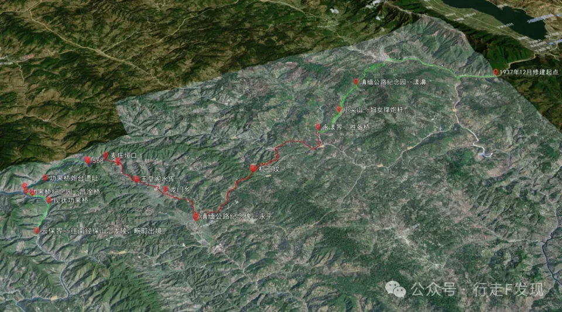
历史背景全文 滇缅公路：用血肉筑就的抗战生命线（含图1–图3）
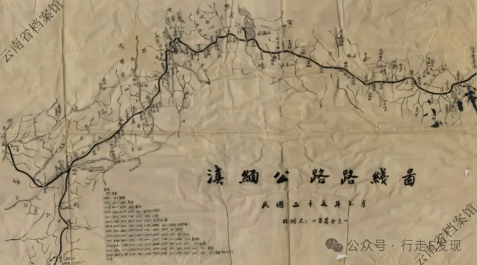
1937年“七七事变”后，抗日战争全面爆发。日军迅速封锁中国沿海港口，切断主要铁路交通，妄图将中国困为孤岛。在此危亡之际，开辟新的国际运输通道成为当务之急。
滇缅公路于1937年底动工，1938年8月通车，全长1146.1公里，中国境内段959.4公里。其中下关至畹町西段长达547.8公里，需跨越漾濞江、澜沧江、怒江，翻越云岭、高黎贡山，工程极为艰险。
在几乎没有大型机械的情况下，多民族筑路大军全靠锄头、十字镐和双手。施工高峰期，每天有20万民工奋战一线，其中多为老人、妇女和儿童，最小的仅6岁。他们自带干粮工具，风餐露宿，以血肉之躯开山辟路。
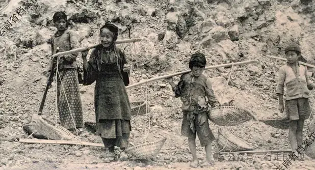
由于工程险峻、条件恶劣，加之沿线瘴气肆虐，民工伤亡惨重。据档案记载，殉难者约3000人，平均每公里3人，伤者无数。有县长悲叹：“不是公路，是血路。”
经过九个月日夜赶工，滇缅公路全线通车，震惊世界。美国驻华大使感叹，这条纯靠人力开辟的公路，“为全世界任何民族所不及”。
在缅甸沦陷、惠通桥炸毁前的三年多时间里，滇缅公路共运送物资50万吨，占当时国际援华物资的90%。其间日军不停轰炸，国人不懈保卫、抢修。
公路通车后，3200余名南洋华侨机工回国投身抗战运输。他们日夜穿行在险峻的滇西群山中，以生命保障着这条生命线的畅通。在永平县铁丝窝路段，因日军间谍引爆车辆，导致数十名机工壮烈牺牲，他们长眠于此，后人称为“机工坟”。
日军深知滇缅公路是中国最后的生命线，为彻底切断这条通道，采取了空袭与细菌战并用的残暴手段。1942年5月4日，日军对保山城发动“五四”大轰炸，正值赶集日，27架日机投下大量炸弹及燃烧弹，直接炸死8800余人，占城区人口三分之一，全城七成房屋被毁。更为残忍的是，日军在轰炸中投下携带鼠疫、霍乱病菌的细菌弹，导致瘟疫在滇西蔓延，后续死亡人数高达6万余人。日军在保山实施的轰炸与细菌战，是人类战争史上罕见的无差别屠杀。如今当地耄耋之年的长者中还有亲历者。
大理作为滇缅公路核心枢纽，同样承受了巨大牺牲。功果桥被炸16次，军民日夜抢修，被誉为“炸不断的桥”；云南驿机场被炸6次，三千余民工牺牲。飞虎队从云南驿起飞，在怒江上空阻击日军，将其阻挡在怒江西岸。日军败退后，公路重建，为反攻提供了重要通道。
滇缅公路，是抗战的输血管，也是中华民族不屈精神的见证。
滇缅公路是一条什么路？
自驾必读贴士 旅行贴士：车型路况、分段导航、落石暗冰、永平黄焖鸡补给（全文）
1.车辆选择：建议驾驶SUV或高底盘车型。虽然部分路段已硬化，但附近的土路、后的坑洼路、以及的老路，对轿车不太友好。
2.导航策略：不能高速优先。建议分段导航，利用“骑行”模式或手动添加“”、“”、“”、“”等途经点。很多老路导航不识别，要结合本文路线图和你的判断。
3.安全驾驶：
4.补给与餐饮：永平县城是重要的补给点，一定要吃永平黄焖鸡。沿途山路崎岖且可能会出现特殊情况，记得关注油量富裕度，并备足饮用水和干粮。
5.人文尊重：沿途的纪念碑、坟冢（如司机坟、机工坟）是先烈长眠之地，请保持肃穆，勿大声喧哗。部分路段途经少数民族村镇，注意尊重民俗。当地民风淳朴。当然，凡事不绝对，切记不要冒失。住宿就餐记得提前充分沟通。
重走这段路，不仅是为了看风景，更是为了触摸那段“滇西各族人民用血肉筑成的国际通道”的沉重历史。
祝一路顺风！
行者Ben
夏历4723年，丙午，2026.3.28
存档说明：本页为公众号「行走F发现」该文的完整存档（全文约6900字、图片31张），2026年11月14日存入本空间；图片为原文配图，未做删改。文中史实与数字为作者原文，未经本空间「史实核查」核对，引用时请另行核实。
北京飞大理 · 机场取车，自驾到漾濞
个人行程。去程航班已订（首都航空短信确认购票成功）。早班机直飞大理，10:50 落地；当天 12:00 在大理机场店取租车（第一段租车已订，一嗨租车），不在大理停留住宿，直接沿 G320 国道自驾前往漾濞，当晚住漾濞一晚：漾濞正漾大酒店，单人间，1张2米大床，35㎡，含2份早餐，¥192/晚，未订。漾濞县城距大理市约 29 公里，车程不长。次日（18 日）上午再沿 G320 国道往永平。租车：大众迈腾自动 2.0T 三厢 5 座（已升级车型），自助取还；11 月 19 日 11:30 在保山青华海官房花园酒店大堂异地还车，共 2 天。押金已全免（已免押）：车辆押金、违章押金都不用交。【行李提醒】这张票托运行李额 0KG，只有手提行李 1 件 7KG、不超 20×30×40cm——9 天行程请轻装打包，或提前加购行李额。起飞前 35 分钟截载，请提前到机场。
西段路书 · 第一段前半 大理下关 → 平坡铺 & 漾濞高铁站（节点 1–2）
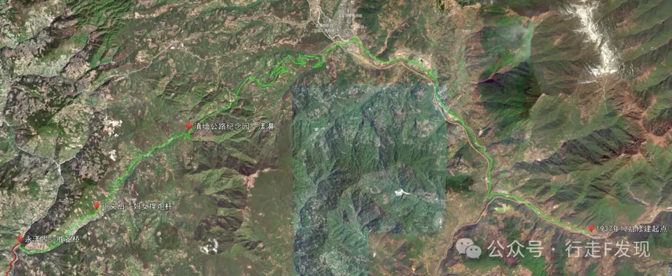
1. 起点：大理下关
从下关出发，不要走高速公路，直接导航，沿G320前行。
2. &
这一段主要沿着漾濞江峡谷前行，是滇缅公路西段的起点。
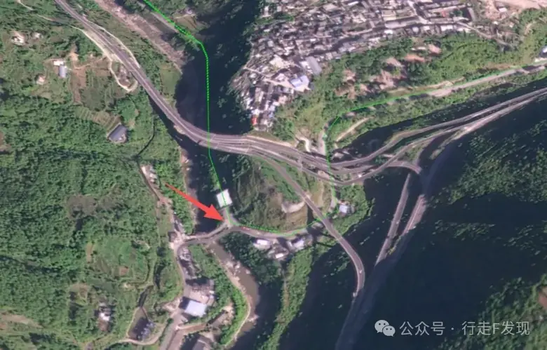
自驾漾濞到永平 · 沿老滇缅公路察看弹石路面
个人行程。上午自驾 G320 国道从漾濞出发，沿老滇缅公路经永平，察看永平段保留的弹石路面，当晚住永平一晚：维也纳酒店（大理永平忆江南店），博南镇忆江南时代购物公园，标准大床房，1张1.8米大床，含双早，约¥217/晚，未订。次日（19 日）从永平向北走「路书：滇缅公路西段」的后半段，经、云龙、、进保山，不再直走 G320。
西段路书 · 第一段后半 漾濞 → 太平乡 → 小尖山 → 胜备桥（节点 3）
3. 至
此段海拔先抬升后下降，老路遗迹开始增多。
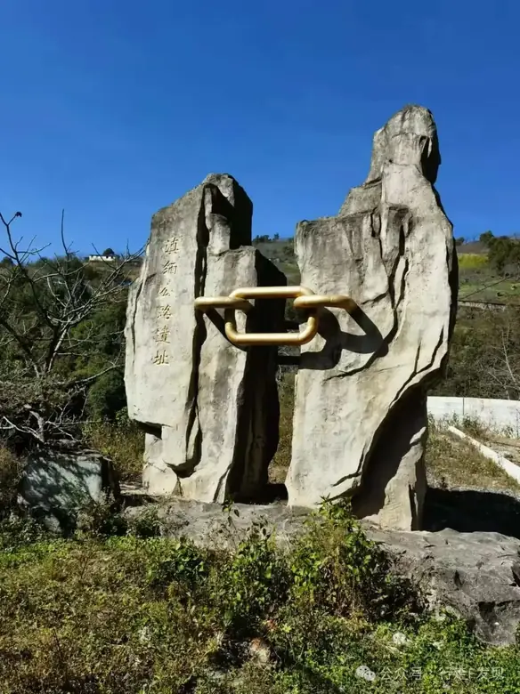
西段路书 · 第二段前半 胜备桥 → 黄连铺 & 北斗乡 → 铁丝窝（机工坟）→ 永平县城（节点 4–6）
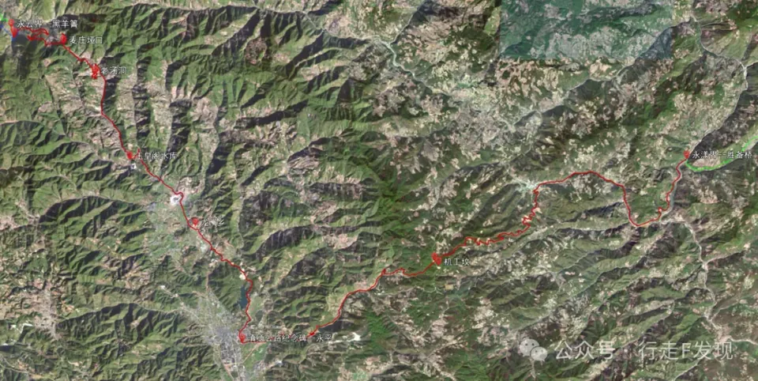
4.&
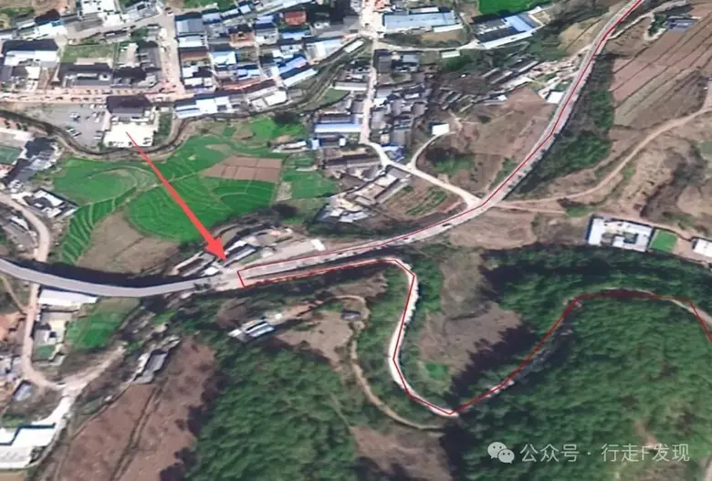
5. ——全路段最高点
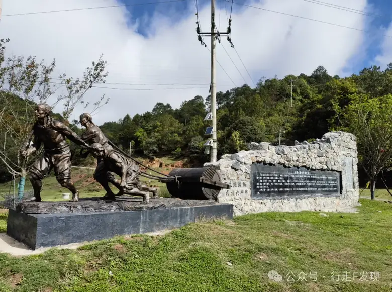
6. & 永平县城
从开始，路线重新汇入G320，抵达永平县城，随后向北转入乡道，开启最刺激的山区路段。
关联核查 铁丝窝「机工坟」与个人经历：内江修理厂汽车兵（史实核查第 7 条）
原说法：我个人的经历，在内江有一个汽车修理厂，工人就是滇缅公路的汽车兵，但被监视使用。
判定：个人经历，公开史料无法核查
更准确的说法：这条是个人经历，公开史料无法证实或证伪。能补充的公开背景是：滇缅公路汽车兵的主体之一南侨机工，留在国内者在建国后尤其文革期间确曾因「历史问题」受猜疑、受冲击——群体背景真实，但与内江某厂个案是两回事，需厂志、档案或当事人口述才能核查。
分项证据：
- 南侨机工：陈嘉庚号召下3,200多名南洋华侨机工回国，任司机与修理工，1,000多人牺牲；战后1,126人复员返南洋，1,072人滞留云南。
- 留在国内的南侨机工在建国后、尤其文革期间遭到迫害，理由是「有资本主义背景，同时在抗战时资助的是国民革命军」，被戴上「特嫌分子」「里通外国分子」「历史反革命」等帽子，有的档案标着「敌伪档案」字样。
- 检索「滇缅公路 汽车兵 内江 修理厂 监视」未发现相关记录；具体工厂、具体人群、具体待遇三要素均无公开史料可对应。
- 南侨机工（回国、牺牲与战后处境）：https://zh.wikipedia.org/wiki/%E5%8D%97%E4%BE%A8%E6%9C%BA%E5%B7%A5
- 中国侨联 · 南侨机工战后命运：http://www.chinaql.org/n1/2021/0407/c437203-32072106.html
自驾永平经云龙、功果桥、坡脚到保山 · 考察团签到
上午从永平出发，不再沿 G320 直接去保山，改走「路书：滇缅公路西段」的后半段：从永平县城向北经、、险峻的“568”，过进入云龙县境，经到，在出口的纪念墙前停一停，看五座桥的变迁；过现状后经（云龙—保山界）向南进入保山。分段导航目标依次为：、、、、。这一段多为县乡山路，坡陡弯急、部分路面坑洼（路书原文提醒），请尽早出发、预留充足时间。11:30 在保山青华海官房花园酒店大堂还车（一嗨租车订单 1247667896，自助还车；押金已全免（已免押），车辆押金和违章押金都不用交）——如按新路线赶不上这个时间，请提前与一嗨确认调整。考察团 Day 1：全天在酒店签到，没有固定集合时间。
西段路书 · 第二段后半 永平 → 龙门乡 → 麦庄垭口 → 险峻“568”与炮台遗址（节点 7–8）
7. 至
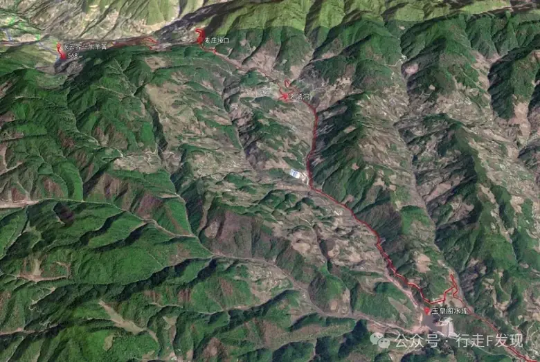
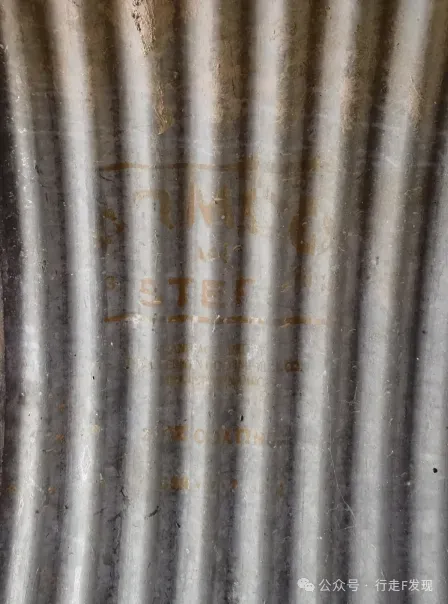
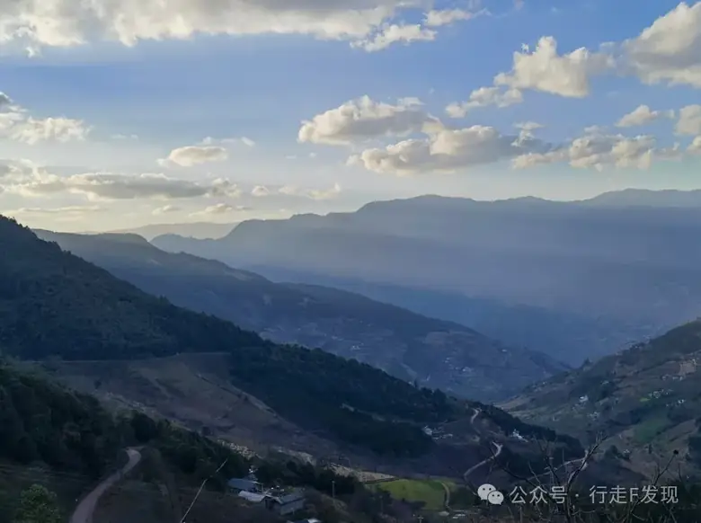
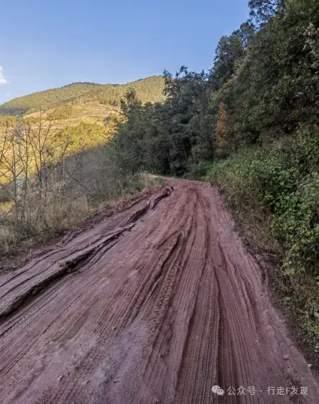
8.险峻“568”与炮台遗址
这一段是当年最危险的路段之一，现在还是老路基，请注意谨慎通过。沘江边的老路已经被水库蓄水淹没，其中小铁桥和昌淦桥已经移建到沘江上游约36km的。现状路为后来修建的新路。
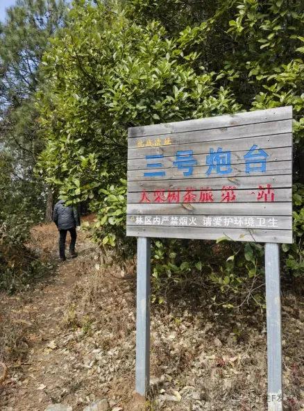
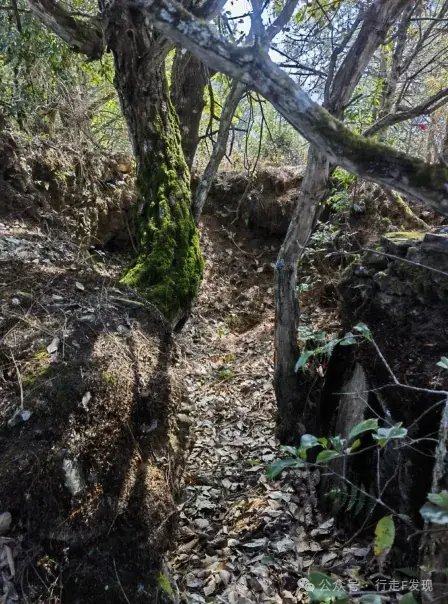
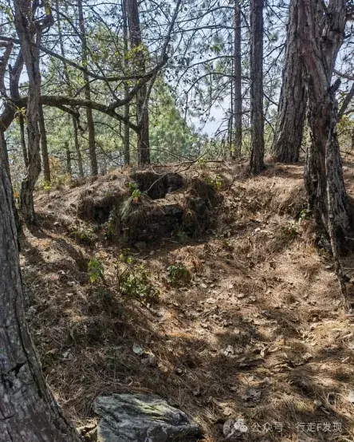
西段路书 · 第三段 云龙县段：永云界 & 大栗树村 → 功果桥区域 → 坡脚进保山（节点 9–12）
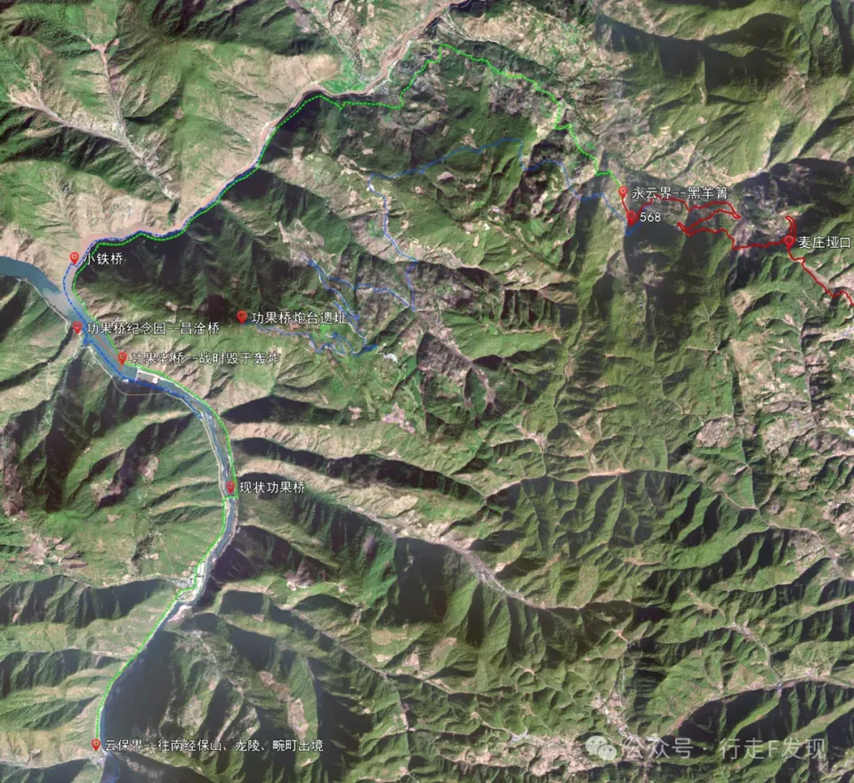
9. 永云界 &
这段路涉及澜沧江峡谷，注意落石，同时充满了战火损毁和因水电站建设而变迁的历史，老滇缅公路已经位于水库蓄水线以下。曾创造“炸不断的滇缅路”奇迹的地方。
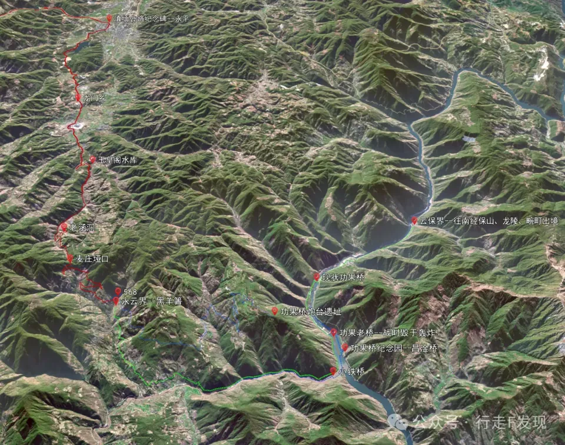
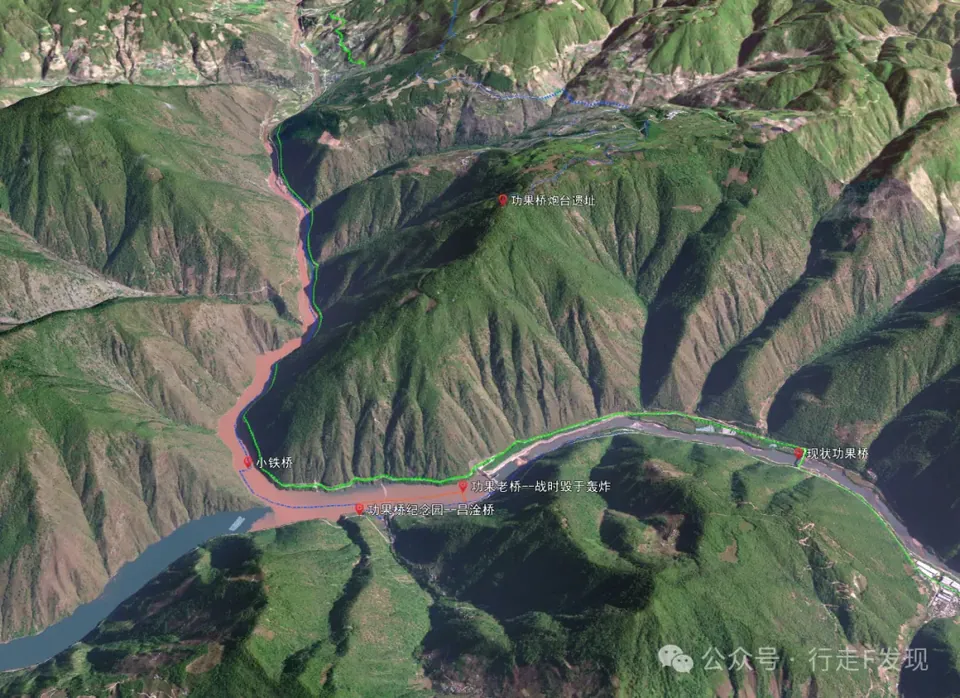
10. 区域
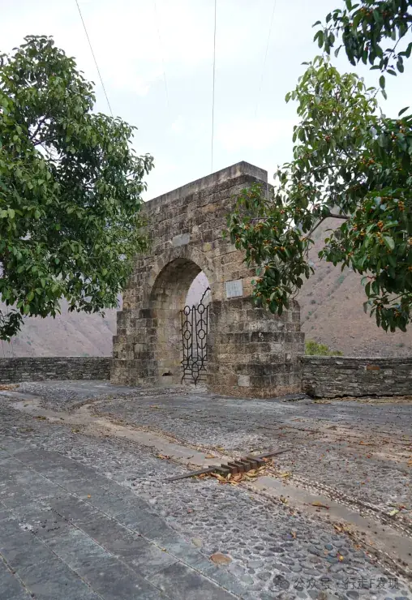
注：昌淦桥、小铁桥后来被移到沘江上游约36km的保存，也可以作为深度游的选项，可以亲手触摸经历战火的老物件。同时，还是云南大学第一任校长董泽先生的故乡，村镇和故居亦可参观。当然，再往北就是云龙县城、、沘江古桥群、等旅游地点。
注：位处存在过多座桥梁，战火损毁，以及水库建设后遗址位于水下，没法目睹原桥位遗址，容易混淆。
展开全文：功果桥五座桥梁变迁与战时汽油桶浮桥传奇（含 6 张历史照片）
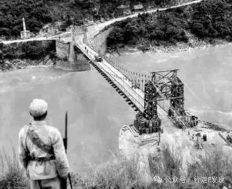
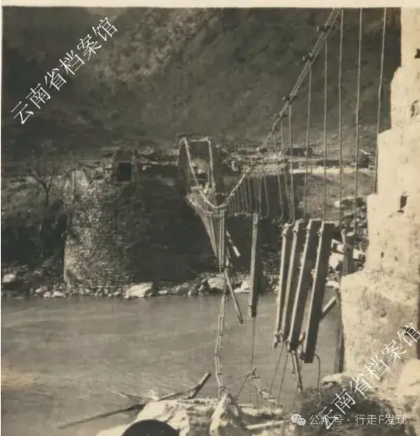
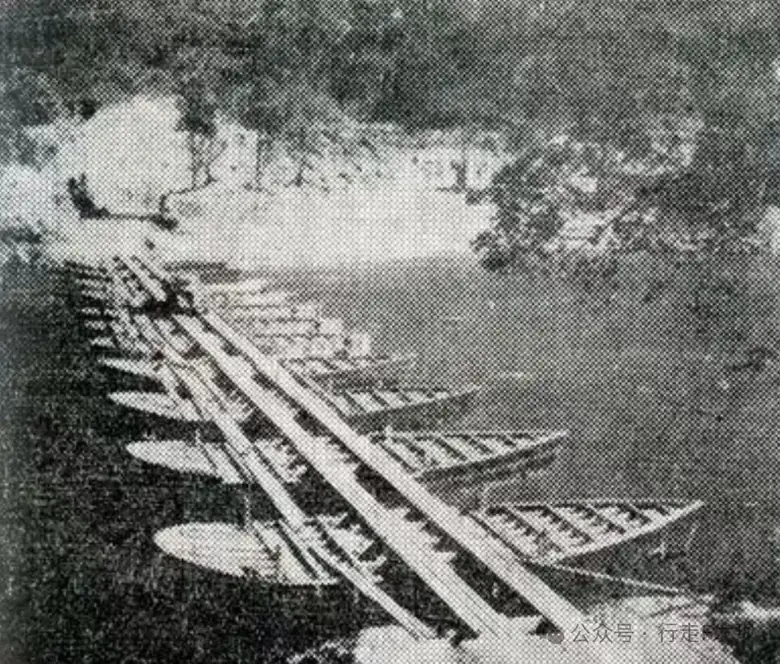
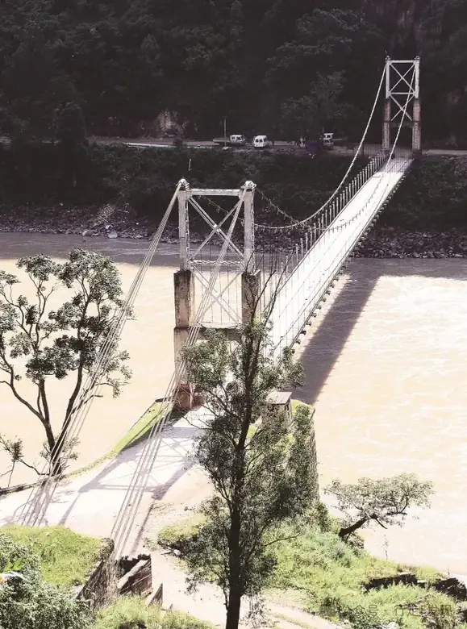
抗战“生命线”上的英雄丰碑：与滇缅公路的铮铮往事
12. 终点：进入保山
（注：原文编号由10直接跳到12，无11。）
手册没有为签到日单列核心问题、问题线索和主题分享——「考察内容」从 DAY.2 开始。贯穿全程的是手册的总问题（见行程表上方）：同一条滇缅走廊，为什么既能组织交换，也能组织牺牲？
手册行程表这一天：全天酒店签到，酒店保山，餐食：无。
- 第三持存：考察本身就是一次持存实践——报名表、《用户信息表》、考察协议、微信群、行前手册、行前准备文件，都是被记在技术载体上、能脱离个人身体保存和传递的记忆。现场可问：这套记录由谁保管？谁有权改写？参团者的信息以什么形式存在（纸质表、在线表单、微信群）？
- 中介穿透：保山是滇缅走廊的节点，也是考察团的集合点。历史上的保山，商号与人情网络是记录的保管者；今天的集合靠线上报名与平台通知完成。现场可观察：地方接待方在集合环节还有没有议价空间——还是只剩执行？
- 对照点：Day 1 没有固定集合时间——这次是飞大理、落地当天就在大理机场取车：17 日沿 G320 国道开到漾濞住一晚，18 日上午沿 G320 国道经永平、察看永平段保留的弹石路面并住永平一晚，19 日从永平向北经龙门乡、云龙、功果桥、坡脚进保山，在保山还车；到达的节奏由自己掌握，而非由某个中介召集或某张时刻表规定。
惠通桥 · 松山战场遗址
考察团 Day 2：惠通桥、松山战场遗址。
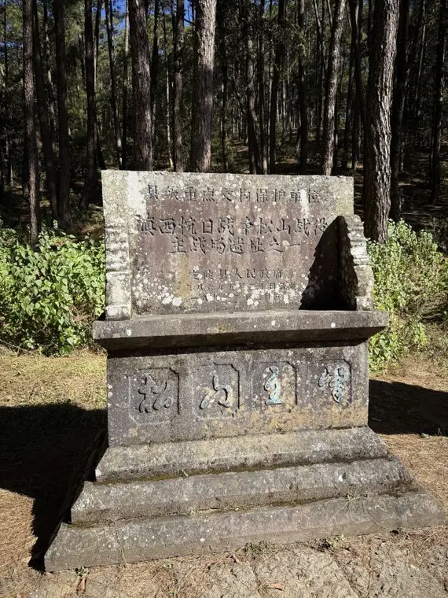
核心问题：
制度如何分配代价？当秩序被压缩到一座桥，谁有权决定它何时中断；当胜利以伤亡换取，必要牺牲在何处结束，组织失效的额外代价从何处开始？
时间的密度取决于空间的完整度：从1942腊戍到通惠桥的时间坍塌，到1944松山龙陵的时间停滞，都是什么样子，为什么会这样？
问题线索：
- 为什么从一座炸断的桥出发，以一座侨乡图书馆结束？
- 时间会坍缩成什么样子？
- 压力为何只向下传导？
考察场景：惠通桥、松山抗战遗址
配图：惠通桥（木板桥面与带红星的桥头）；松山 · 中国远征军雕塑群（松山抗战遗址的中国远征军雕塑群与纪念碑）
主题分享：从溃败到反攻：时间的密度为什么大不相同，前者像滚雪球，后者像啃骨头，而人和组织在其中是什么样的？
- 第三持存：行前准备的现场问题是——谁立了惠通桥的碑文？谁测绘了松山的地道？碑文、战史馆展陈、地道测绘图都是持存物；追问的不是碑文写了什么，而是记录由谁制作、由谁保管、后来有没有被改写过。
- 中介穿透：惠通桥是滇缅公路的咽喉，可对照许小亮的「数字霍尔木兹海峡」——控制通道者控制流速、流量与指向。现场可问：1942 年惠通桥被炸断后，渡口的摆渡、征粮、征夫由谁登记？这套登记与今天的健康码闸机、燃气用量倒推营业额之间，是同一种「从末端向中心回收」的逻辑吗？
- 战争秩序的极端持存：松山战役的指挥、补给、伤亡登记，是「把人登记成兵员、把粮登记成军需」的现场。现场可观察：纪念馆的名单、数字、地图，哪些是原始记录，哪些是后人重建？被登记者的名字有没有被遗漏、被合并、被改写？
- 准租：惠通桥是不可复制的通道资产——它的价值不随收费变化。现场可问：当年守桥、摆渡、征粮征夫的安排里，谁的收益来自位置本身的不可替代（一种准租），谁的收益只是一时的价格？松山的隘口与地道同样是位置资产：控制咽喉者收取的，正是这种不随价格变化的收入。
点位书单与核查 余戈《1944：松山战役笔记》· 邓贤《大国之魂》创作原点 · 日德会师核查
《1944：松山战役笔记》（余戈 · 现场主读）：1944年6月4日中国远征军强渡怒江进攻松山，至9月7日占领，历时3个月3天；龙陵县政府数字为全歼日军1288人、远征军伤亡7773人（伤亡比约1:6）。松山扼滇缅公路咽喉，公路经惠通桥越怒江后在松山盘旋40余公里，顶峰炮火可控制怒江两岸公路70余公里。行前读松山本篇，看子高地、坑道爆破点时才有空间感。
《大国之魂》（邓贤 · 第 0 本）：1987年邓贤途经松山大垭口因塌方受阻，听老石工讲起激战往事并在树林中找到「国民革命军第八军松山阵亡战士纪念碑」，成为此书创作原点。注意：现场数字、番号、战法一律以余戈与纪念馆档案为准。
董家沟日军慰安所旧址 · 史迪威公路
考察团 Day 3：董家沟、史迪威公路。
核心问题：
秩序的价格。当暴行被登记、检查和收费，合规为何没有带来正当性；当外援修成一条生路，弱国为指挥权、资源与生命付出了什么价格？
碾压：暴力的秩序化、理性化、机械化为什么如此可怕？
问题线索：
- 对弱国而言，外援是一条生路，还是另一套控制结构？
- 当恶行被拆分后，该如何判定每个人的责任？
- 我们究竟要从黑暗中学习什么？
考察场景：董家沟日军慰安所旧址、史迪威公路博物馆
配图：董家沟日军慰安所旧址（旧址内景，黑白照片）；史迪威公路博物馆（展厅里的美军吉普车队）
主题分享：恶有多少种？每一种应该怎么归责？由谁承担？如何承担？同盟援助，是否需要计算各方付出的代价？
- 第三持存：行前准备的现场问题是——董家沟展陈的记录从何而来？受害者的姓名如何被重新登记？慰安所本身就是一套登记制度：被登记者的名字、籍贯、编号由谁写下、写在哪里、后来如何被找回、被展出。这是全程最直接的检验点。
- 中介穿透：史迪威公路是一条物理「管道」——补给线。现场可问：公路的修筑、维护、通行由谁记录？滇缅公路的修筑者（南侨机工 3,200 余人，1946 年 1,126 人返回南洋、1,072 人留在云南）在官方记录与民间记忆中分别以什么形式存在？谁保管哪一份记录？
- 对照点：董家沟在三本行前推荐书中均无专门章节（仅有关于其 2010 年展览馆的搜索摘要说法，未经核实）——一处重要遗址在「正典」持存中的缺席，本身就是一个值得记录的观察。
专题纳入 · 慰安妇制度与索赔 张纯如：把慰安妇和南京大屠杀带上索赔的桌子 & 董家沟陈列馆提醒
讲到慰安妇制度，还有一个人绕不开——张纯如。邓贤把慰安妇制度第一次写进中国战争文学，张纯如则把慰安妇和南京大屠杀受害者的索赔，推到了公共议程上。
【已核实】张纯如（Iris Chang），美籍华人作家，著有《南京大屠杀》（The Rape of Nanking, 1997）和《美国华人史》（The Chinese in America, 2003），长期推动对日索赔与道歉的公共活动。2004 年，她用手枪自杀身亡。
【范卫平口述，待核】她的作品和她的社会活动，促进中国慰安妇和南京大屠杀受害者向日本政府要求赔偿，却遭遇当时中国人的不理解，认为日中友好，张纯如为出名牟利，给中国人的伤口撒盐。后来写美国华人移民史，也遭到了美国华人的指责，理由类似。张纯如痛惜中国人如此不为自己权利付出，最终吃大亏，开始以书籍出版为契机，推动美国华人社会保卫自己权利的活动，最终不堪被误解，用手枪自杀。
现场提醒（摘自「行前四本书 · 三个提醒」）：已查资料均未显示四本书以董家沟为专章。邓贤《大国之魂》第一次把日军随军慰安妇制度写进中国战争文学（约两万字），但写的是制度，不是董家沟这个具体旧址。董家沟日军慰安所旧址是龙陵日军侵华罪证遗址之一，董家沟慰安妇制度罪行陈列馆建于2010年，是中国第一个日军慰安妇制度罪行陈列馆。到现场以纪念馆展陈与讲解为准；该点涉及日军慰安妇制度罪行，参观宜庄重。
国殇墓园 · 来凤山 · 李根源故居
考察团 Day 4：国殇墓园及滇西抗战纪念馆、来凤山、李根源故居。
核心问题：
国家与个人之间。谁的名字进入国家记忆，谁的余生留在叙事之外；当国家能力抵达边疆，真正把命令变成行动的是谁，他们得到了怎样的承认？
Inception：你的记忆、情感、观念并不“自然”，谁在操纵，为什么，怎么弄，你该怎么办？
问题线索：
- 共识更重要，还是真相更重要？
- 一封告示与一封回信为什么能成为政治资源？没有地方社会的配合，一道命令还剩下什么？
- 惨胜还是胜利吗？
考察场景：国殇墓园及滇西抗战纪念馆、来凤山、李根源故居
配图：国殇墓园 · 警钟（国殇墓园的警钟亭）；苔痕石碑（青苔覆盖的石碑）；李根源故居（故居正门）
主题分享：国家与个人之间那一层人：把命令变成行动的人，与被纪念碑挑掉余生的人，是不是同一批人？
- 第三持存：行前准备的现场问题是——国殇墓园碑上是谁的名字？挑夫和骡马是否被纪念？墓碑是最古老的第三持存之一：谁的名字被刻上、谁被遗漏，本身就是一次记录的筛选。现场可数、可拍、可核对：碑上的名字与战史记载是否一致？有无挑夫、民工、骡马的纪念物？
- 话语技术：行前准备提到张问德《答田岛书》作为政治资源。这正是我在十一届三中全会论文中分析过的技术——「老教条新解读，构造新场景」：同一文本被重新解释、边界外移，成为新的权力工具。现场可问：《答田岛书》在纪念馆中如何被展陈？被放在什么叙事位置？
- 中介穿透：纪念馆的讲解词、展陈顺序、灯光与动线，是一套当代的「记录保管」方式。现场可观察：讲解内容各地是否一致？地方讲解员还有没有自己的发挥空间——还是只能复述统一文本？
个人认知纳入 远征军被看到，是历史的偶然（范卫平口述思考全文）
远征军被看到，是历史的偶然。1949年后，由于这是国民党军队的抗战，参加过远征军的军人被整肃，甚至用电影《抓壮丁》来筹划。比如把抗属（抗日家属），谐音为炕熟，远征军军人的弟弟小名芋子娃，变成电影的台词：你把芋子娃炕熟，还不如蒸熟。（范卫平个人认知，待核）
90年代，因中央被打倒的邓小平、陈云等要重新掌权，否定了毛泽东的做法，让历史上收到牵连的普通人也得到一些机会，从黑五类等贱民身份。
远征军的雕像今天我们能看到，不是一个历史事件，而是一个现实的事件。
就像王康的例子：王康（1949年生，重庆民间学者）2009年邀请数十名画家，历时五年半，画了一千多个人物，其中抗日阵亡少将以上将领242人，240名是国民党军人，组织创作巨型长卷史诗国画《浩气长流》，全长1012米，1400多位人物，连战题词，2010年7月在台北国立国父纪念馆首次大规模展出，至今未在中国大陆展出；王康说抗日战争是全民参与的战争，不能因维护一党专政而不择手段扭曲历史、埋没英雄。
我们今天的权力结构并没有改变，基本逻辑和展开逻辑的机制和49年相同，只是技术支持和表现的事件的外貌不同。广东人之所以对政治不敏感，是因为当年叶剑英的庇护，中央权力不进广东。（范卫平个人认知，待核）今天，这个庇护已经不存在了。整个中国进入战时体制。（范卫平个人观点）
点位书单与核查 章东磐《父亲的战场》（战后老兵余生）· 东北军第53军在云南核查
《父亲的战场》（章东磐 · 见人）：到腾冲国殇墓园时，这本书提供的「战后老兵命运」视角比单纯战役叙述更贴近墓园意义——书中写每月得200元资助高喊「我现在一个月可以吃两回肉了」的叶进财、错遇26年牢狱仍优雅教书的上尉张子文、在战友墓前颤抖的陆朝茂、为战友迁墓奔波的刘老伯。
和顺古镇 · 下午结营
考察团 Day 5：和顺古镇，下午结营。
核心问题：
同一条走廊，为什么既能组织交换，也能组织牺牲？从战争秩序走回贸易秩序，我们究竟重新获得了什么，又失去了什么？
战争和暴力的必要性，和平和人情的根本性，孰重？它们之间是什么关系？
问题线索：
- 贸易秩序和战争秩序，在使用人力、资源、信任上有什么根本差别？
- 空气式决策是如何一步步形成的？
- 两种生存秩序，你倾向哪一种？另一种存在什么问题？
考察场景：和顺古镇
配图：和顺古镇（石牌坊）
主题分享：什么样的思维、监测机制与制度节点，能让我们穿透表层道德感动，真正从历史教训中习得改变？贸易秩序相较战争秩序的优势是什么？
- 第三持存：行前准备的现场问题是——和顺图书馆的藏书与捐赠、宗族规约与账本。图书馆、族谱、账本是前现代的第三持存：贸易秩序把记录留在商号和人情网络里。现场可看：账本由谁保管？宗族规约今天还起不起作用？
- 两种秩序的对照：Day 2–Day 4 是战争秩序（登记成兵员 / 军需），Day 5 是贸易秩序（记录留在商号、人情网络）。现场可追问：同一条滇缅走廊，为什么既能组织交换，也能组织牺牲？（考察手册的核心问题）两种秩序的记录方式有何不同——哪一种更依赖中介？哪一种更容易被中心回收？
- 考察本身的收束：结营之后，这次考察的记录（笔记、照片、本页）将成为新的持存。现场可问：考察团的记录由谁保管？团员的笔记与官方叙事之间，留不留得下「空隙」——报纸时代留下的那种「可以带走、隔天再读、与人争论」的空隙？
腾冲取车 · 自驾经盈江、瑞丽到芒市
个人行程。考察团上午在腾冲结营。之后在腾冲取租车（尚未预订，已定次日在芒市异地还车），当天一路自驾经盈江、瑞丽开到芒市，当晚住芒市——不在瑞丽过夜，次日不用早起赶路。
边境路线关联思考 北中国与南中国：许小亮老师在泉州考察时提出（瑞丽江国界与三条铁篱笆）
考察泉州时，许小亮老师提出，中国以前有一个北中国和南中国，南中国是以泉州、广州为中心的，包括整个东南亚，是文化、经济为核心的中国。
今天我们在南海画了九段国境线，把大部分南中国划出去了。（转述观点，待核）
云南边境当年勘界作战，今天修筑了三条铁篱笆，把包括南亚的中国也划出去了。（转述观点，待核）以瑞丽江为国界。（转述观点，待核）
这也是缅北电诈园一直不能根除的主要原因。中国要去缅甸抓捕，必须缅甸政府同意，即便是缅甸政府同意，地方武装也不愿意配合。而且即便配合，也是漫天要价，敷衍了事。（转述观点，待核）
芒市机场还车 · 直飞回北京
个人行程。早上从容前往芒市机场，先还车（异地还车，还车点取车时与租车公司确认），再乘 MU5717 直飞北京大兴，12:15 抵达。航班尚未预订。
在中国，技术不是封建性的第三种形态，而是封建性的终结者。
报纸时代（1900s–1990s）：封建性形变
报纸把「从一处向全体复制」工业化了，造出了安德森所说的「想象的共同体」——报纸造出了「人民」；但记录仍是手工的（宣传靠印刷机，档案靠钢笔），中央看不到、管不到的地方只能交给中介。于是中介换了人：从地主、族长换成山头、单位、地方政府，封建制从土地型变成组织型。钱颖一与许成钢的统计被反复引用：1979 年中国直接纳入中央计划的产品仅 791 种，同期苏联超过 1,200 万种；财政包干时期中央财政收入占比一度跌到约 22%。手写报表之下，中央看不到真实的账，于是「一放就乱，一管就死」。
互联网时代（1994–2018）：中介被穿透
持存方向第一次反了过来：从末端向中心回收，记录生成的同一刻即在中心。亲历例证是 1990 年代山西孝义——市政府一台服务器、一根电话线连通各县税务局电脑，第一次直接看到各县税收数据；1994 年分税制、金税一期、中国全功能接入国际互联网发生在同一年，「不是巧合，要把财政收回来，就得看见地方的账」。体制外基础性权力（驻京办、茅台会）失去筹码，体制内基础性权力被穿透（2018 年国税与地税合并，地方税务局撤销）。但依附还在，只是对象变了：从多个能议价的中介，变成一个不需要议价的主权者。中央看见了末端，执行仍要靠人。
AI 时代（2020s）：封建性终结
云集中算力、平台集中数据、大模型集中解读、智能体集中执行，持存从记录延伸到解读与执行。官僚是体制内最后一层基础性权力，AI 正在取消它留下的裁量空间。结论是直接独裁制——集权、专制、极权合一，「连枪口抬高一寸的余地，也没有了」（《独角戏旁白脚本》）。封建制下的人至少还能从一个领主转投另一个领主；中介消失以后，这个选项也随之消失。报纸造出了「人民」，互联网、AI 把这群人变成了可以被直接读取、直接处置的末端。
方法：政治发生学
我自称这是政治发生学（《云端终结了中国的封建制度（重构稿）》）：先格局（节点拓扑）后流动（过程—事件分析，孙立平）；发生学解释断裂，路径依赖解释延续；存续机制是激励相容（许成钢《制度基因》）。李筠的写法规则被我奉为写作纪律：开篇「表面上……实质上……」，每节一对概念，先判断后证据，收束落到更大的问题（《写作提纲》）。
分两组：第一组是我自己的概念（或由我重新定义的核心概念），第二组是引自他人的概念——来源都标在每条下面，不混用。
第一组：我自己的概念（11 条）
自有概念中介穿透
IT / AI 以低成本、高可靠性取代地方中介；管道让封建坍塌，走向「管道专制」。关键限定：被穿透的不是一切中介，而是以信息不对称为依托的中介；生产新判断的位置反而更集中、更稀缺——谁控制管道，谁就界定什么算「线索」。
自有概念管道专制
依附的对象从多个能议价的中介，变成一个不需要议价的主权者。孟庆延在 2026-11-04 会议记录现场的补充几乎是同一表述的镜像：「最可怕的是把所有中介机制夷平，底下的人活在虚拟世界里享受虚假平等，上面是一个运转不那么快的 CPU 分包任务」（「养猪社会」）。
自有概念直接独裁制
集权、专制、极权合一；一个由「什么」构成的中间层无法与最终权力形成交换关系。最终决策不经过任何有自主性的中间层直接作用于个人——连「枪口抬高一寸」的余地也没有了。
自有概念政治发生学
泉州田野期间与李筠讨论中提出，用于星火系列考察。两步：先格局（节点拓扑）后流动（过程—事件分析，孙立平）；发生学解释断裂，路径依赖解释延续；存续机制是激励相容（许成钢《制度基因》）。
自有概念科技共和国（我的修正）
许小亮的问题意识是：技术不再是外在于人类社会的工具，而是感知世界、形成规则的制度环境本身；立法越来越多地发生在模型权重、API、云平台、身份认证、权限结构、内容过滤和默认设置中（「事实立法权」）。我的修正是：科技共和国的基础不是 AI，而是区块链——区块链孪生是宪法层，AI 智能体孪生是立法者层；「每一笔交易即一次立法」。
自有概念区块链孪生 / AI 智能体孪生
区块链孪生不是现实的副本，而是现实运行的法律及法律的执行者：规范性本体，自动执行规则。当孪生比物理原型更高效、更可信、更广泛使用时，发生本体论翻转——孪生成为现实世界的本体。AI 智能体孪生是人类立法者 / 执法者在区块链上的孪生，在宪法框架内自动生成和执行微观法律。
自有概念寡头知识分子（第一代 / 第二代）
第一代（Thiel、Karp 等）将思想系统性地工程化为制度与规则，掌握「思想的落地」；第二代通过区块链孪生 + AI 智能体孪生崛起，同时被去中心化结构约束为「共和式寡头」，以结构性力量迫使第一代分享权力。
自有概念观念水位 / 伪神
洪秀全（基督教外壳自封「天弟」）→ 马克思主义世俗宗教（用马克思代替上帝、党章代替《圣经》、政治局代替使徒行会、私有制 = 原罪）→ AI（全民祀奉的新救世主）。观念的池子有多浅，伪神就有多猖獗；启蒙缺席是结构性问题，不是道德问题。
自有概念斜坡
封建与专制之间不是墙，是斜坡；美国仍在封建一侧，但国防订单绑定、国家入股与黄金股、紧急状态权常态化是润滑剂。
自有概念软件从「产品」变成「事件」
API / CLI / MCP 为每次用户需求临时组合，任务完成后组合清空；固定软件曾是用户和能力之间的中介，一次性组合把这层中介也溶解了；依附转移到组合的提供者——谁掌握接口目录、算力和沙盒，谁就是新的中介。
自有概念准租（quasi-rent）
定义（薛兆丰）：租就是对资产的付费。资产的含义非常广，包括土地、矿山、人的才能、发明创造，甚至是特权——只要能够带来收入的，就叫资产。「租」最早指的是地租；经济学家把这个词用到更广的范围时，为了区别，有时候叫「准租」。核心是：有一种资产，不以收费的变化而变化，这种资产带来的收入就是租，是一种相对「旱涝保收」的收入。
举例：北大教授的次优选择是回去当程序员，收入落差的那部分就是白赚的租；猫王当歌星收入 1000 万，次优选择是卡车司机 10 万，中间的 990 万就是租；出租车牌是排他性垄断经营权，叫垄断租。但「旱涝保收」是相对的：猫王不经营自己也会掉价，教授不更新课件，收入也会受长远影响——没有真正旱涝保收的收入。
总纲（准租.md）：职业资产金融化，即具备寻租的条件。寻租就是坐享其成、被动收入、房产出租。
案例：阿那亚的溢价（准租-阿那亚.md，2026-10-18）：阿那亚公寓对马路对面的四合院：同一片海、同一块地，价差解释不了砖瓦和面积。租 = 最优选择（阿那亚公寓）− 次优选择（马路对面的四合院）。这份溢价付给两类不可复制的资产：一是社区资产——人群、文化活动、物业服务和品牌；二是制度区隔——边防管理，没有街道办事处等地方政府权力介入，规则稳定、环境封闭，类似出租车牌照的排他特权。所以阿那亚的溢价主要是制度租和社区租，不是地租。这也是相对的：社区运营松懈，溢价缩水；制度区隔一旦消失，就成了「又一个海边小区」。
延伸：阿那亚的溢价可以看作一个测量工具，量的是人们愿意为「基层权力不在场」付多少钱。中介穿透之后，还有没有权力无法直接抵达的「桃花源」？阿那亚的价格，就是它的市场标价。
第二组：引自他人的概念（15 条）
引自他人封建性 = 资源 + 身份 + 依附
三种形态可叠加转化：土地型、组织型、技术型；技术型成立的五个条件是——算力数据模型云接口集中；技术分类身份化；必经少数系统；退出即多重损失；规则缺乏透明申诉共同制定。我在二稿中把《论纲》的「技术」重述为「工业化媒介技术支撑的第三持存」，并提出三个命题：每种封建形态有自己的第三持存；工业化改变持存的复制 / 传输 / 回收方式，决定中介能否存在；判断标准是第三持存分散在多个能议价的中介手里，还是集中在一处。
引自他人第三持存
被记在技术载体上、能脱离个人身体保存和传递的记忆；书本、照片、录音、算法、大模型都是第三持存；AI 不过是迄今最精密的「外接硬盘」。我的核心追问由此而来：第三持存保管在谁手里？
引自他人「谁」与「什么」
「谁」是人（有时间感，知道自己会死，会焦虑，会承诺，会背叛）；「什么」是物（从石斧到 ChatGPT）。AI 只会「输出」不会「回应」，不能与 AI「承诺」，不能签契约，没有信任就没有社会关系；跨个体化只能发生在「谁」与「谁」之间。
引自他人过程—事件分析
社会不是实体，而是依时间序列展开的过程；过程是独立的解释变项；四要素是过程（深描）、机制（逻辑发挥作用的方式）、技术（行动者的策略，凸显主体性）、逻辑（研究目标；AI 中是算法）。我在十一届三中全会论文中用此方法解构「平反」机制与「实践标准」话语技术，并将其与 AI 的时序模型对接：政治转型与代码运行的本质都是「状态在时序事件驱动下的流转与重组」；从过程-事件分析梳理出的逻辑，事件将按此逻辑继续运行，不以人存废改变——在 AI 中表现为算法。应星进一步发展为「追根溯源的事件社会学」。
引自他人制度基因
使制度自我复制的基本要素，三条件：长期存续、激励相容、基础性作用。帝制三位一体（纵向官僚体系、土地与经济特权系于皇权、科举与官方儒学控制人事意识形态）vs 当代三位一体（党国官僚体系、党国控制土地金融经济制高点、党控制人事意识形态），称「地区管理式极权主义」；「暴政激励相容」；中共从苏联进口 100% 的列宁主义政党制度基因，运作上演化出横向「块块管理」（苏联是垂直「条条管理」）。
引自他人事实立法权（De Facto Legislative Power）
「新秩序的立法越来越多地发生在模型权重、API、云平台、身份认证、权限结构、内容过滤和默认设置中。法律仍在前台发言，但系统已经在后台预设了许多行为边界。」
引自他人数字霍尔木兹海峡 / 没有全球政府的全球费用
AI 基础大模型、云平台、API 接口是数字空间的海峡；API 作为通行控制点；海峡名义开放但被保险费率、风险评级、护航、制裁织就的「隐性封闭网络」实质剥夺开放性；AI 规训的动态封闭门槛是动态价格门槛、默认设置与安全过滤、地缘政治内政化。
引自他人被发明的 1648
威斯特伐利亚谈判的核心不是确立排他性国家主权，而是对神圣罗马帝国宪制、诸侯特权、自由城市、宗教妥协及外部担保强权的多层权威艰难缝合；真实图景是「多层权威的复杂接合」，与科技共和国的权力矩阵同构。
引自他人元宇宙是新媒介 / 第七媒介器官
元宇宙是人类的第七媒介器官（六根眼耳鼻舌身意 + 元宇宙），是现实世界的三维仿真媒介，产生与现实等维的认知信息；人类成为半人半数字的合成物种；元宇宙是可以和文字发明相提并论的新媒介——人类经验又一次大规模存储和分发的方式。
引自他人隐微写作
显白教诲（表面文字）vs 隐微写作（字里行间）；Thiel 2004 年《施特劳斯时刻》将基拉尔模仿欲望与暴力理论、施特劳斯隐秘教诲、施米特敌友政治论「焊接」；Palantir 是将隐微教诲算法化的实验场——本体（Ontology）→ 上下文（Context）→ 行动链（Action Chain）的闭环。
引自他人non-domination（无支配）
支配不在于实际干预，而在于对方可以任意干预而你无法抗辩；我以此作为评价标准，并据此设计检验：研究者 / 当地人能否在不付出代价的情况下拒绝或绕开一条管道。
引自他人软信念（Soft Beliefs）
硬实力（代码、云、武器级 AI）只有服务于某种超越技术本身的软信念时才有生命力；我的软信念寄托在个人生命史中——《土地和珍珠》的意象：土地（农业社会肉身经验，最难被数字化格式化）vs 珍珠（信息 / AI 时代比特世界，被提取的经验、被标记的数据）。
引自他人硅基劳动者 / 两次解绑
第一次解绑：软件开发从大量人类编码时间中解绑；第二次解绑：软件使用从大量人类操作时间中解绑；软件的前台正在消失，后台正在扩张；产出 = 碳基时间 +（硅基时间 × 并行系数）。我转述并扩展为「软件从产品变成事件」。
引自他人千脑智能理论
新皮质成千上万皮质柱各自是独立预测单元，通过「参考系地图」游走认知世界；与 Palantir 本体架构同构。
引自他人「大宪章」（数字宪政主义）
不想要「美丽新世界」（数字极权主义），也不想要「雪崩」（数字封建主义）；「大宪章」如何从「为（数字）权利而斗争」中产生？「前途渺茫，但必须一战！」
以下写成可检验的表述，不下断语。检验标准取自我自己的框架：Pettit 的 non-domination（能否在不付出代价的情况下拒绝或绕开一条管道）与二稿的证伪条件。
✓ 会印证论点的证据（如果成立）
- 松山、惠通桥、国殇墓园的展陈记录（名单、数字、地图）由统一平台或中央机构保管，地方讲解员只能复述统一文本，没有自己的改写空间。
- 董家沟受害者的姓名登记完整、可公开查阅，且由统一数据库保管，任何一级地方都无法截留或改写。
- 和顺的商号账本、族谱已被数字化收进统一系统，宗族与商号不再掌握资源的解释权与分配权。
- 考察团自身的组织（报名、缴费、分组、通知、日程变更）全程经线上平台完成，地方接待方只有执行权，没有议价空间。
- 现场工作人员（如纪念馆守门人）对「红码放不进来、绿码拦不住」式的规则没有裁量余地——规则由系统执行，人只是执行环节的末端。
✗ 会反驳论点的证据（如果成立）
- 现场仍有地方中介在截留或改写记录：展陈内容由地方决定、讲解词因地而异、纪念名单的地方版本与中央版本不一致。
- 董家沟受害者姓名登记不完整、无法公开查阅，或记录仍被某一级机构保管而不开放——记录仍在某个中介手里。
- 和顺的宗族、商号网络仍在实际运转并掌握资源分配（如捐赠、修缮、接待的决定权），账本与规约仍是活的制度而非博物馆展品。
- 考察团现场仍需依赖地方向导、地方关系协调行程（用车、进馆、临时变更），中介仍在发挥议价作用。
- 出现「数字军阀」的边界情形：某一级的地方数据库独立运行、不与上级系统互通（我在《政治发生学提纲》中给出的证伪条件之一：封建回潮要求管道本身碎裂为「数字军阀」，而不只是中央崩溃）。
- 依附只是转移而非消失：中介穿透之后，新的依附点出现（如统一平台、数据服务商），而当地人或研究者无法在不付出代价的情况下拒绝或绕开它——这正是 GPT-Rosalind 案例给出的检验。
需要区分的两种情况
中介穿透 ≠ 中介消失。我在 AI 做科研的笔记中明确写道：被穿透的是以信息不对称为依托的中介；生产新判断的位置反而更集中、更稀缺。现场应区分「中介被绕过」与「中介换了主人」。
依附转移 ≠ 依附终结。依附还在，只是对象变了——从多个能议价的中介变成一个不需要议价的主权者（或平台）。现场检验的关键不是「还有没有中介」，而是「能不能议价、能不能退出、能不能申辩」。
本页据 EIDOS-Club 文件夹中的学术写作整理：通读 27 份文件全文、略读 10 份大体量材料；《滇西考察行前学术准备.md》按先前全文阅读的摘要引用。因格式原因未读的有：所有 .pdf（包括《文明的进程》《阶序人》《美丽新世界》全文、孟庆延主稿 PDF、许小亮主稿 PDF、各期 PPT、2026-11-04 会议记录全文约 12 万字口述整理，仅读了提要）、所有 .docx（同名 .md 已全文读）、所有图片、.xmind、.code-workspace 等。略读材料包括孟庆延主稿 Markdown 副本（仅读前 60 行）、孙立平 / 应星过程—事件分析诸篇（各仅读前 50 行）、《元宇宙评议稿》（仅读目录与本人章节）等——正文断言不超出已读范围。
考察手册行前推荐三本书，加上邓贤《大国之魂》，共四本，分工互补。建议顺序：先读邓贤《大国之魂》见「魂」、作总纲，再读章东磐见人、齐锡生见大局，最后读余戈见仗。时间不足时，邓贤全读，余戈只读松山本篇，腾冲、龙陵两部续作按行程选读。
版本：长篇纪实文学，全稿约31万字。1990年12月由《当代》杂志发表（选刊约20万字），人民文学出版社随后出版全稿单行本（初版月份各来源说法不一，见下方提醒）；重印本有四川文艺出版社2009年1月版、湖南人民出版社/人民文学出版社2011年4月版等，至2013年已有十二种版本
简介：四本书里的「第 0 本」：时间最早、视野最广、与这次考察路线重合度最高的一本长篇纪实文学。它写的不是一场仗，而是1941年底到1945年初、中国远征军围绕滇缅公路这条唯一的西方物资补给线与日军争夺的三年三个月。作者本人就是从松山出发、沿怒江—腾冲—高黎贡山实地走访后写出此书的；军史作家余戈也是先读这本书，才对滇西战场有了粗略认识、进而去做松山研究的。先读它建立全景和情感，再读另外三本。
作者是谁：邓贤，1953年生，纪实文学作家，祖籍湖北武汉（出生地各来源说法不一，不作定论）；1982年毕业于云南大学中文系，1992年加入中国作家协会，享受政府特殊津贴，现任四川省作家协会副主席、成都师范学院教授。1971年他随1200多名知青到云南建设兵团当知青七年，1977年高考恢复后考入云南大学。他的父亲当过中国驻印军战士（责任编辑何启治的回忆称其父是中国远征军的运输兵），这段家世是理解此书的线索——邓贤自述从小背着「黑五类」家庭包袱，直到高考改革才离开边疆农场。写作此书的直接契机与这次考察直接相关：1987年他途经松山大垭口时因塌方被堵住，帮路边老石工打石头，听老人讲起这里曾是远征军与日军激战的战场，又在路边树林里找到「国民革命军第八军松山阵亡战士纪念碑」。此后他背着书包，在怒江两岸的松山、腾冲和高黎贡山脉走了两个月，回昆明后在云南图书馆住了半年读尽相关档案书报，采访上百人，回成都后又采访了父亲的六七十名健在战友，《大国之魂》就此完成。
主要内容与核心观点：全书以滇缅公路这条补给线为争夺对象，写远征军第一次入缅的失败与撤退、驻印军在缅北的反攻、1944年滇西大反攻（松山—腾冲—龙陵），直至中印公路打通。书中写及孙立人、戴安澜、蒋介石、杜聿明、史迪威等人物。书名「大国之魂」的含义，责任编辑何启治的定性最权威：作品「着意通过二战中滇缅印战区的故事来透视中日英美等大国的民族之魂，无论对中国军队、中华民族的优劣，或西方盟友和日本侵略者的长短，都作了严肃冷峻的剖析」。它还有一个开创性的位置：余戈说，上世纪90年代公众才开始看到滇缅战场的作品，「最有影响力的作品就是邓贤的《大国之魂》」——它把长期不被公开讲述的中缅印战区第一次推到公众面前。此书1994年获人民文学奖等多个奖项，1995年被改编为十集电视连续剧《中国远征军》。
提醒（纪实文学，不是战史）：它是长篇纪实文学，不是学术战史：余戈评价它「太粗线条，细节上不太让人满足」，写松山只用了一章、一万多字。维基百科直言「此书内容错的也多」，并指出网上流传的「孙立人下令活埋1200名日军俘虏」一说最早源头就在此书（抗战纪念网的考证文章引为1991年版第356–357页），属无稽之谈，不要引用为史实。邓贤本人也承认写父亲从军时间时为主题做过文学调整（小说中提前一年）。所以：用它理解「为什么要去、带着什么情感去看」，现场的数字、人名、番号、日期一律以余戈、纪念馆展陈和档案为准。
与考察点的关系：松山：关系最直接——松山是此书的创作原点，书中专章描写第八军血战松山（中新网语），但只有一章一万多字，现场战法以余戈为准。惠通桥：书中未找到专写惠通桥的逐页证据，但它是全书争夺的那条滇缅公路跨越怒江的咽喉，读此书是为了理解「为什么要炸桥、为什么要夺回这条路」。腾冲：邓贤1987年实地走访地之一，未找到书中分章写腾冲的证据，现场以余戈《1944：腾冲之围》和纪念馆为准。史迪威公路：史迪威是书中主要人物之一，打通补给线就是全书的战略目标与物质结局；注意不同来源对通车日期表述不同（1月19日北线通车、1月27日芒友会师、1月28日南线通车），不要混为一天。董家沟：书中没有专写董家沟，但此书第一次把日军随军慰安妇制度写进中国战争文学（约两万字，何启治语）；董家沟慰安所旧址正是那种制度在龙陵留下的实物罪证——可以说「邓贤写了慰安妇制度」，不要说「《大国之魂》写了董家沟」。
为什么值得出发前读：它是这段历史进入公众视野的「第一本书」之一，读它等于读这段历史被重新发现的过程；作者的调查路线就是考察路线，读着书去松山，会在纪念碑、战壕、地堡前有「作者当年也站在这里」的对照感。它提供「魂」的框架，能把惠通桥（咽喉）—松山（钉子）—董家沟（罪证）—腾冲（光复）—史迪威公路（打通）五个分散的点串成一条线。全稿约31万字，也是四本书里最容易在出发前读完的一本；优先借31万字全稿本或注明全稿的重印本，不要只读20万字的杂志选刊本。正确的态度是：用邓贤入门、用章东磐动情、用齐锡生明局、用余戈核仗。
附节全文：张纯如——把慰安妇和南京大屠杀带上索赔的桌子（已在 11.21 董家沟展开）
讲到慰安妇制度，还有一个人绕不开——张纯如。邓贤把慰安妇制度第一次写进中国战争文学，张纯如则把慰安妇和南京大屠杀受害者的索赔，推到了公共议程上。
【已核实】张纯如（Iris Chang），美籍华人作家，著有《南京大屠杀》（The Rape of Nanking, 1997）和《美国华人史》（The Chinese in America, 2003），长期推动对日索赔与道歉的公共活动。2004 年，她用手枪自杀身亡。
【范卫平口述，待核】她的作品和她的社会活动，促进中国慰安妇和南京大屠杀受害者向日本政府要求赔偿，却遭遇当时中国人的不理解，认为日中友好，张纯如为出名牟利，给中国人的伤口撒盐。后来写美国华人移民史，也遭到了美国华人的指责，理由类似。张纯如痛惜中国人如此不为自己权利付出，最终吃大亏，开始以书籍出版为契机，推动美国华人社会保卫自己权利的活动，最终不堪被误解，用手枪自杀。
全名：《父亲的战场：中国远征军滇西抗战田野调查笔记》
版本：山西人民出版社，2009年7月
简介：一部关于中国远征军的民间调查纪实。作者从2003年起在滇西走访在世老兵、重走滇缅公路、翻越高黎贡山，把「战争打完之后，这些人后来怎么样了」写了下来。它是四本书中文字最感性、最适合在车上和晚上读的一本，也是理解「为什么要去滇西」的情感入口。
作者是谁：章东磐是退役军人，当过炮兵、侦察兵，后做过故宫博物院书画鉴定、人民美术出版社编辑，再后经商。1999年到云南经商时第一次了解到修建滇缅公路的故事，2003年起在滇西做多年田野调查，两次翻越高黎贡山。他自称研究这段历史的「兽医」——因为正经专家没人理这个茬儿。一个需要说明的细节：他的父亲是新四军抗日老兵，不是远征军老兵；书名表达的是后来人对民族光荣父辈的敬意，而非字面意思。
主要内容与核心观点：书中人物都是具体的人：每月得到200元资助、高喊「我现在一个月可以吃两回肉了」的士兵叶进财；错遇26年牢狱磨难却依然优雅安详、出狱后教书育人的上尉张子文；在战友墓前不能自持地颤抖的士兵陆朝茂；为把战友遗体迁入墓园到处奔波的刘老伯。作为纪实作品，作者对老兵口述做了辨识和指正，没有盲目采信，也未对其中大话、诳语做修改装饰。随书首度发表近百张美军拍摄的远征军照片，展现当时的地形地貌、武器装备与士兵音容笑貌。
与考察点的关系：作者两次翻越高黎贡山、重走滇缅公路，书中的地形、照片与行走路线和这次考察高度重合。到腾冲国殇墓园时，这本书提供的「战后老兵命运」视角，比单纯的战役叙述更贴近墓园的意义。松山、惠通桥的战术细节以余戈为准，战略背景以齐锡生为准——这本书贡献的是「人」的那一层。
为什么值得出发前读：四本书中只有这一本把镜头对准「活下来的人」。只读战史，容易把老兵抽象成数字；章东磐写的是他们战后数十年的坎坷，能让考察团在现场讨论「战争记忆如何被保存、又如何被遗忘」时有具体抓手。篇幅不长，适合在邓贤之后接着读。
全名：《剑拔弩张的盟友：太平洋战争期间的中美军事合作关系（1941–1945）》
版本：台湾版：中央研究院、联经出版公司，2011年，694页；大陆版：社会科学文献出版社，2012年6月
简介：一部以蒋介石与史迪威关系为主轴、重新评估太平洋战争期间中美军事合作的学术专著。它不是战场游记，而是回答「滇缅战场这盘棋为什么这样下、又为什么下得这么别扭」的书——四本书中唯一的顶层框架。
作者是谁：齐锡生是芝加哥大学博士，主修国际关系和政治学；1967–1992年任教于美国北卡罗来纳大学，1992–2002年参与香港科技大学建校工作并任历史系主任。研究兴趣为中国近代内政外交、国际关系理论和军备战略，代表作还有《中国的军阀政治》。
主要内容与核心观点：作者利用新公开的中国政府档案与蒋介石日记，为蒋介石与中方立场正名：认为蒋抗日决心坚定，1942年初曾派最精锐部队入缅；同时指出美国对华援助吝啬、优先欧洲，美方对华有种族与文化上的优越感和居高临下的态度，真正影响同盟关系的核心人物是罗斯福的下属史汀生、马歇尔和史迪威。该书2012年出版后，「颠覆了此前史迪威完全正面的形象，并改变了人们对于中美同盟的历史认知」。
学界分歧（不是定论）：这不是定论。书评者 Steve Tsang 肯定该书为蒋方正名的价值，但认为它对美方处理「较不令人满意」，把第一次缅甸战役失败的责任主要归于史迪威有失公允；蒋本可要求撤换史迪威却没有做，应对「史迪威事件」发酵负主要责任；美国援华少首先是因为优先欧洲，不全是种族傲慢。行前读到这一分歧本身就有价值：到了史迪威公路、松山现场讨论「同盟」时，不宜只用单一立场。
与考察点的关系：全书的核心背景就是第一次缅甸战役的失败、滇缅公路被切断与1944年反攻，解释了为什么中国要出兵缅甸、为什么反攻一拖再拖。注意两条路的区分：滇缅公路1938年8月通车，昆明至缅甸腊戍，全长1100多公里；史迪威公路即中印公路，1942年开始修建，1945年1月贯通，印度雷多经密支那至畹町、衔接滇缅公路至昆明，全长1700多公里；1945年1月27日中国驻印军与远征军在芒友会师。本书不写单场战斗的逐日经过，但解释了惠通桥、松山、腾冲这些地点的战略位置从何而来。
为什么值得出发前读：到了松山、惠通桥现场，若只知道「仗打得很惨」，容易把原因归于某一次指挥失误；齐锡生把问题抬到同盟政治、援华物资分配、指挥权之争与中美互信缺失的层面，能帮助理解为什么1944年反攻来得那么晚、代价那么大。本书较厚，行前选读缅甸战役、史迪威事件与援华物资相关章节即可，不必通读。
版本：生活·读书·新知三联书店，2009年8月；2025年7月推出增订本。续作：《1944：腾冲之围》（2014）、《1944：龙陵会战》（2017）
简介：四本书中与考察点对应最直接的一本，「滇西抗战三部曲」的开篇。全书30余万字，获第六届文津图书奖。作者提出「微观战史」写法，像用显微镜看历史一样，把松山之战还原到逐日、逐时、逐个山头。续作写腾冲攻城战与龙陵会战，三部合起来就是1944年滇西反攻的完整拼图。
作者是谁：余戈1968年7月出生，陕西人；1985年考入军校从军，曾任雷达技师、宣传干事；1994年调入解放军出版社，后任《军营文化天地》杂志主编；2000年起收藏抗战文物、研究抗战史，2018年调入军事科学院从事军战史研究。他不是传统学院派学者，自称历史「发烧友」，军校学过军事地形学，2004年以来到滇西田野调查十余次，每年至少一次。
主要内容与核心观点：松山战役：1944年6月4日，中国远征军强渡怒江进攻松山，至9月7日占领，历时3个月3天；龙陵县政府的数字为全歼日军1288人、远征军伤亡7773人。这被评价为「中国军队第一次真正意义上取得全胜的攻坚战」。全书引用115部（篇）文献、100余篇报刊文章，880余条注释、34幅图表，史实精微到每日、每时、每人、每物、每事；方法上用中、日、美三方史料互参，挤压「演义」和「戏说」的空间。余戈把滇西抗战总结为「惨胜」：滇西平均伤亡比约1:5，松山、腾冲约为1:6，原因包括吃空饷、缺额、训练不足与军官素质等；驻印军因史迪威牢牢掌握指挥权、公开发饷、美式训练充分，战斗力明显高于滇西远征军。
与考察点的关系：松山：全书即松山战役的现场读本。松山扼滇缅公路咽喉，公路经惠通桥越怒江后在松山盘旋40余公里，松山顶峰炮火可控制怒江两岸公路70余公里。腾冲（续作）：1944年5月11日第20集团军强渡怒江，历时127天，9月14日收复腾冲——抗战中中国军队通过攻坚收复的第一座县城，远征军伤亡近2万人。龙陵（续作）：远征军以重兵三战龙陵，其后收复芒市、遮放、畹町，与驻印军会师芒友、打通中印公路。松山、腾冲是日军第56师团防御体系的两个「龙头」，龙陵是「龙身」。
为什么值得出发前读：它是唯一能让考察团「带着地图去现场核对」的书。余戈本人说，读者带着书去现场检查，会发现作者是一个一个战场研究过的，书可以当作历史导游手册来用。行前读松山本篇，到了松山遗址看子高地、坑道爆破点时才有空间感；否则只看纪念碑与展板，容易把95天血战压缩成一句话。三部合计约200万字，不必求全，读透松山本篇比泛读三部更有现场价值。
电视剧《中国远征军》（2011 年版 · 45/56 集）
四本书之外，再加一项观影：电视剧《中国远征军》，2011年2月22日在江苏卫视、云南卫视首播，共45集（DVD版）/ 56集（TV版）。董亚春、杨军执导，邱对编剧，黄志忠饰韩绍功、张丰毅饰孙立人、柯蓝饰何玉姝，刘小宁等主演。注意不要与《大国之魂》条目里提到的1995年十集电视连续剧《中国远征军》混淆——那是另一部同名作品，本条说的是2011年这一版。
主要内容：全剧以中国远征军第200师和新38师两支传奇之师为代表，讲述中国远征军在同古战役、仁安羌战役、野人山大撤退、滇西大反攻等重大历史事件中的经历，把第一次入缅作战、撤退与1944年反攻这条线完整串了起来。
与考察点的对应：同古、仁安羌、野人山，对应远征军入缅作战与撤退；滇西大反攻，对应这次考察的松山、龙陵、腾冲一线；剧中孙立人一条线，对应《大国之魂》里写到的孙立人——读邓贤时留意的那个人物，在剧里由张丰毅饰演。出发前看几集，能先把地名、部队番号和事件顺序在脑子里立起来，到了现场再用余戈和纪念馆展陈去核对。
提醒：第一，这是战争剧情片，人物和情节有艺术加工：韩绍功等主角是虚构人物，不能当作战史来引用，现场的数字、人名、番号、日期仍以余戈、纪念馆展陈和档案为准。第二，此剧2013年获第二十八届中国电视剧「飞天奖」长篇电视剧二等奖。
三个提醒
董家沟没有哪本书专写。已查资料均未显示四本书以董家沟为专章。邓贤《大国之魂》第一次把日军随军慰安妇制度写进中国战争文学（约两万字），但写的是制度，不是董家沟这个具体旧址。董家沟日军慰安所旧址是龙陵日军侵华罪证遗址之一，董家沟慰安妇制度罪行陈列馆建于2010年，是中国第一个日军慰安妇制度罪行陈列馆。到现场以纪念馆展陈与讲解为准；该点涉及日军慰安妇制度罪行，参观宜庄重。
《大国之魂》初版月份各来源说法不一。维基百科称人民文学出版社1991年11月出版，一篇转载文章称1991年10月，责任编辑何启治的回忆则称31万字全稿1990年10月由人文社出版、《当代》1990年第6期选刊约20万字。三说无法裁断，应以实际借到或买到的那一本的版权页为准。
伤亡数字各来源有出入。松山歼敌有1288人（龙陵县政府）与1300余人两种说法；腾冲歼敌有2100余人与3000余人两种说法；龙陵收复日期有11月3日与11月6日两说。本页正文用约数表述，不强行统一。
展开核查出处链接（共 14 条公开来源）
- 中央研究院近代史研究所集刊第78期 · Steve Tsang 书评（齐锡生书目与核心论点）：https://www.mh.sinica.edu.tw/MHDocument/PublicationDetail/PublicationDetail_1511.pdf
- 新浪新闻访谈《齐锡生：胡适做大使对抗战有贡献，但软弱无能》（2019-05-27）：https://news.sina.cn/2019-05-27/detail-ihvhiews4830384.d.html?vt=4
- 中国作家网《滇西抗战三部曲》（余戈简历与三部曲梗概）：http://www.chinawriter.com.cn/n1/2017/1019/c405065-29596676.html
- 中国作家网 · 陈立言《再现松山战役硝烟》（松山本篇出版与体例）：http://www.chinawriter.com.cn/wxpl/2014/2014-10-27/222529.html
- 界面新闻专访《军史作家余戈》（「微观战史」与「惨胜」论）：https://www.jiemian.com/article/1758845.html
- 河北师范大学图书馆《2025年5月推荐阅读书单》（章东磐与《父亲的战场》）：https://library.hebtu.edu.cn/a/2025/05/07/46EC92074E604BC699A3F5C92F94CF1C.html
- 抗日战争纪念网 / 中华读书报《章东磐：寻回「国家记忆」》：https://m.krzzjn.com/show-1172-19454.html
- 龙陵县人民政府《松山战役介绍》（松山—惠通桥—滇缅公路与伤亡数字）：https://www.longling.gov.cn/info/35894/4369779.htm
- 中国作家网会员页「邓贤」（身份、代表作、获奖）：http://www.chinawriter.com.cn/n1/2016/0627/c404931-28487289.html
- 中新网《邓贤：从代言知青到探究历史》（知青经历、1987年松山契机、专章写第八军血战松山）：https://www.chinanews.com.cn/cul/news/2010/05-11/2274733.shtml
- 中国作家网《邓贤：追溯「富二代」父亲的抗战足迹》（父亲从军时间与文学调整的自述）：http://www.chinawriter.com.cn/2013/2013-01-05/151120.html
- 维基百科「大国之魂」（全书梗概、出版与「内容错的也多」的提醒）：https://zh.wikipedia.org/wiki/%E5%A4%A7%E5%9C%8B%E4%B9%8B%E9%AD%82
- 何启治《朝内166：我亲历的当代文学》转载页（编辑定性、慰安妇内容约两万字、《当代》选刊版）：https://www.megbook.com.hk/mall/detail.jsp?proID=2908470
- 抗战纪念网《孙立人的真与假》（杀俘情节源头考证）：https://m.krzzjn.com/show-607-46846.html
出发前，我把自己关于这段历史的九条想法逐条拿去和公开史料核对了一遍。结论先说：没有一条能原样成立——5条部分有据、需要修正，2条与史实不符，第7、8条是个人经历，公开史料没法核查。每条按「原说法 → 判定 → 更准确的说法 → 分项证据」展开，来源逐条附在后面。判定分四档：有史料支持／证据不足或有争议／与史实不符／无法核查（个人经历）。
第 1 条 · 日德南线会师与远征军 部分有据，核心因果与史实不符
原说法：日本当年是要和希特勒在南线汇合，占领印度，希特勒当时已经打到北非。中国远征军虽然军事失败，但打断了日德南线汇合的进程，吸引日军改变作战方向，向云南进军。
判定：部分有据，核心因果与史实不符
更准确的说法：日德会师计划（「东方行动」）确实存在，但它因「巴巴罗萨」暂停、又因斯大林格勒与阿拉曼的失败而取消，与远征军无关；日军进云南是其缅甸作战的既定延伸，不是被远征军「吸引」后改变方向。
分项证据：
- 会师计划代号「东方行动」：1941年2月17日希特勒下令筹划，德军经南俄、北非与中东推进，日军经印度推进，在东经70度线会师，前提是攻占高加索、确保北非、击败苏联。
- 隆美尔非洲军团1942年7月突入埃及，进抵阿拉曼——不列颠百科全书称其为「德军深入埃及的最远点」；第二次阿拉曼战役（1942年10月23日–11月4日）英军获胜。
- 计划取消的原因在史料中写得很明确：因进攻苏联（巴巴罗萨）而暂停，又因1942年末至1943年初斯大林格勒与阿拉曼失败而取消。时间上与远征军第一次入缅（1942年3–5月）没有因果链条。
- 日军第15军1942年3月8日登陆仰光后分路北进，目标本就是切断滇缅公路；4月29日腊戍失守，5月3日日军进入云南，5月5日攻至惠通桥，5月10日攻占腾冲——进云南是既定作战的延伸。
- 史料对第一次入缅失败的表述恰恰相反：「日本既封锁了国际援华运输线，又打开了西攻印度的大门。」1944年日军仍发动英帕尔—科希马战役进攻印度东北部，至1944年6月才败退。远征军同古、仁安羌等战斗确实牵制迟滞了部分日军，但提升为「打断日德会师」属过度推论，无学术来源支持。
- Operation Orient（「东方行动」条目）：https://en.wikipedia.org/wiki/Operation_Orient
- 不列颠百科全书 · 阿拉曼战役：https://www.britannica.com/event/Battles-of-El-Alamein
- 中国远征军（第一次入缅结果）：https://zh.wikipedia.org/zh-mo/%E4%B8%AD%E5%9B%BD%E8%BF%9C%E5%BE%81%E5%86%9B
- 缅甸战役（日军北进与入滇时间线）：https://zh.wikipedia.org/zh-sg/%E7%B7%AC%E7%94%B8%E6%88%B0%E5%BD%B9
第 2 条 · 北线：蒙古、新疆与「几乎成功」 部分有据，关键处夸大、因果不成立
原说法：日本北线以东北为基地，向西联合蒙古王公，鼓励蒙古、新疆以民族独立的意识形态，成立民族共和国，脱离中国。几乎成功（可以引用范长江《中国的西北角》），后因关东军冲动占领华北失去战争资源和政治资源。
判定：部分有据，关键处夸大、因果不成立
更准确的说法：蒙古方向确有日本扶植的傀儡政权，但德王始终未获日本允许建立真正的「蒙古国」；新疆的分离牵引主要来自苏联而非日本，「几乎成功」无据；日本北进实力的丧失源于持久战消耗、诺门坎惨败与战略转向南进，不是「占领华北失去资源」。
分项证据：
- 蒙古部分有据：1933年7月德王在百灵庙召集内蒙古自治会议；1935年关东军副参谋长板垣征四郎与德王商谈建「蒙古国」，赠五十万元与五千支枪；1936年成立「蒙古军政府」，1939年并入「蒙疆联合自治政府」，1945年瓦解。
- 范长江《中国的西北角》（1935年西北考察通讯结集，1936年8月出版）确有同时代揭露：其核心判断是「日本之攻略西北，不是借地防赤」；《忆西蒙》揭露额济纳旗猖獗的日本间谍活动。但它是记者通讯，能证明渗透与当时人的警觉，不能单独证明「几乎成功」。
- 新疆部分证据不足：1933年喀什「东突厥斯坦伊斯兰共和国」不到三个月瓦解，其外部支持主要是英国；当时新疆主导者盛世才走亲苏反日路线，1941年甚至向苏联提议成立突厥斯坦苏维埃共和国加盟苏联，被斯大林拒绝。王柯研究评估：昭和日本对新疆「没有直接的领土野心」。
- 「占领华北失去资源」因果颠倒：占领华北本身就是掠夺资源（「保障日本对华北地区的经济侵略与资源掠夺」）。真正使日本失去北进能力的是中国持久抗战深陷泥潭、1938年张鼓峰与1939年诺门坎两次对苏进攻失败，1940年7月日本正式以「南进」为国策。
- 蒙疆联合自治政府：https://zh.wikipedia.org/zh-my/%E8%92%99%E7%96%86%E8%81%94%E5%90%88%E8%87%AA%E6%B2%BB%E6%94%BF%E5%BA%9C
- 清华大学 · 重读《中国的西北角》：https://www.tsjc.tsinghua.edu.cn/info/1042/2108.htm
- 王柯《东突厥斯坦独立运动》书评（香港中文大学）：https://www.cuhk.edu.hk/ics/21c/media/articles/c146-201309002.pdf
- 盛世才（亲苏路线与1941年提议）：https://zh.wikipedia.org/wiki/%E7%9B%9B%E4%B8%96%E6%89%8D
第 3 条 · 东北军「唯一一次」在云南 与史实不符
原说法：中国东北军唯一一次和日军作战，是在云南。
判定：与史实不符
更准确的说法：东北军在云南作战是事实，但远非唯一一次、更非第一次：从1931年江桥抗战、1933年长城抗战，到第53军在华北、华中转战多年，云南只是1943年后的一站。
分项证据：
- 1931年九一八事变后，马占山等东北军爱国官兵在江桥奋起抗击日军，苏炳文等部亦起义抗日。
- 1933年长城抗战：东北军参加义院口、冷口、喜峰口、古北口等地作战；第53军前身即东北军一部，万福麟任军长。
- 1937年全面抗战后，第53军参加平汉线、津浦线作战与武汉会战（1938年），1939–1943年春隶属第九战区，在湖南、江西参加南昌会战、历次长沙会战、鄂西会战。
- 1943年春，第53军才由湖南调往云南弥渡、蒙化地区，加入中国远征军第二十集团军序列，参与滇西反攻。
- 抗日战争纪念网 · 江桥抗战：https://m.krzzjn.com/show-607-31044.html
- 抗日战争纪念网 · 长城抗战中的东北军：https://m.krzzjn.com/show-505-48969.html
- 抗日战争纪念网 · 第53军作战历程：https://m.krzzjn.com/show-918-91006.html
第 4 条 · 驼峰航线、学生兵与飞虎队 拆分判断：多处需修正，一处无法确认
原说法：驼峰航线是美国空军从印度运送物资到重庆，重庆运送学生兵到印度接受孙立人将军的训练和指挥，接受美式装备和训练。和陈纳德的飞虎队没有关系。这些学生兵解放后被打成反革命。
判定：拆分判断：多处需修正，一处无法确认
更准确的说法：驼峰航线东端主要是昆明而非重庆，承担运输的是美国陆军航空队（当时没有独立的「美国空军」，USAF成立于1947年）与中国航空公司；学生兵赴印受训大体属实，但兵员来自川滇黔多省、兰姆伽训练由史迪威总负责，并非都归孙立人指挥；飞虎队1943年改编的第14航空队参与过驼峰运输与护航，「没有关系」不成立；「解放后都被打成反革命」无公开档案或研究支持，无法确认。
分项证据：
- 航线西起印度阿萨姆（汀江等地），东至昆明，巫家坝是「最主要的终点站」，昆明还有呈贡、羊街、杨林、沾益、云南驿等机场；物资可再转运四川宜宾、重庆、成都等地，但重庆不是主终点。
- 学生兵赴印大体有据：1942年8月新38师、新22师进驻印度兰姆伽训练基地，改编为中国驻印军，装备美械受训；10月改编新1军，郑洞国任军长，孙立人时任新38师师长（1944年8月后任新1军军长）。兰姆伽共训练驻印军军官5,368名、士兵48,124名。
- 两点修正：补充兵员来自四川、云南、贵州多省征集，并借昆明返航运输机空运，并非仅重庆组织；1943年起选送知识青年补充驻印军技术兵种，1944年「十万青年十万军」拨给印缅远征军1万余人，但青年军主力（12.55万人）在云南、贵州、广西、湘西训练，不在印度。
- 「与飞虎队无关」不成立：飞虎队（中国空军美国志愿援华航空队）1942年7月4日解散后并入第10航空队特遣队，1943年改编为第14航空队，曾「协助飞越喜马拉雅山，从印度接运战略物资到中国」，部分原队员后来飞驼峰航线，1943年秋征调的大学生也有人被分到第14航空队任翻译联络。准确说法是：驼峰航线≠飞虎队，但两者在人员、护航与后勤上有交集。
- 「解放后被打成反革命」无法确认：新1军1948年10月在长春覆灭，孙立人去台湾；镇反运动（1950–1953）确实针对国民党残余势力，但未找到任何公开档案、学术研究或官方文件证明赴印学生兵作为一个群体「都被打成反革命」。原国军人员受冲击的个案存在，群体性定性需地方档案或专项口述史才能判断。
- 抗日战争纪念网 · 驼峰航线与昆明机场群：https://m.krzzjn.com/show-524-50011.html
- 抗日战争纪念网 · 兰姆伽训练基地：https://m.krzzjn.com/show-1451-11242.html
- 抗日战争纪念网 · 知识青年补充驻印军：https://m.krzzjn.com/show-607-42885.html
- 飞虎队（解散与改编第14航空队）：https://zh.wikipedia.org/zh-my/%E9%A3%9B%E8%99%8E%E9%9A%8A
第 5 条 · 金三角与勘界作战 前两段基本有据，后段时序颠倒、与史实不符
原说法：金三角是共军进攻国军，国军退入缅甸，周恩来与缅甸政府协议，开始「勘界作战」，入缅20公里，后缅甸军队节节后退，国军始进入金三角。
判定：前两段基本有据，后段时序颠倒、与史实不符
更准确的说法：国军1950年2月就已退入缅甸，比勘界作战早十年以上；1960–61年的中缅联合勘界警卫作战是打击国军残部、迫其向缅老边境全面撤退，缅方收回3万多平方公里土地——作战结果与说法正好相反。
分项证据：
- 国军入缅基本有据：1950年2月20日，第8军237师709团团长李国辉率1,000多名残军从云南西盟佤山进入缅甸；后在李弥号召下整编为「云南反共救国军」，一度达2万余人。
- 勘界作战基本有据，但背景是边界条约：1960年1月28日周恩来与奈温签订边界问题协定与互不侵犯条约，10月1日签订《中缅边界条约》；11月4日中缅两军在昆明签署联合勘界警卫协议，中方获准在执行警卫任务时进入缅甸境内20公里。
- 1960年11月22日至1961年2月9日，解放军边防部队两次出境，与缅军联合清剿国民党残军，共歼敌740人，协助缅方收回3万多平方公里、30多万人口地区。
- 「缅军节节后退、国军始进入」不成立：国军进入缅北早于作战十年；1961年1月联军越线进攻后，国军总指挥柳元麟当夜下令向缅老边境全面撤退，放弃经营十多年的基地。缅军1961年1月一度受挫求援，发生在国军盘踞缅北十年之后，不能解释「始进入」。
- 国史网《中缅联合勘界警卫作战始末》：http://hprc.cssn.cn/gsyj/gfs/gjaq/202101/P020210122540563055552.pdf
- 外交部《中缅边界条约》文本：https://www.fmprc.gov.cn/wjb_673085/zzjg_673183/bjhysws_674671/bhgjty/ldbjty/202303/P020230320397496730777.pdf
- 中缅联合勘界警卫作战（作战经过与结果）：https://zh.wikipedia.org/zh-cn/%E4%B8%AD%E7%BC%85%E8%81%94%E5%90%88%E5%8B%98%E7%95%8C%E8%AD%A6%E5%8D%AB%E4%BD%9C%E6%88%98
- 文汇报 · 勘界作战中的「红线」细节：https://wenhui.whb.cn/zhuzhan/dushu/20200102/311867.html
第 6 条 · 缅甸排华、缅共与知青 拆分判断：前有据，「配老婆」证据不足
原说法：49年建国后，文革期间，缅甸排华（需要查起因），中国支持缅甸共产党，大批知青进入缅甸参战。缅甸共产党的军官，都在中国配有老婆。
判定：拆分判断：前有据，「配老婆」证据不足
更准确的说法：1967年缅甸排华的导火索是毛像章禁令与使馆散发语录、像章，深层原因有北京「革命外交」输出革命与奈温政府转移国内不满等；中国援缅共、知青参战属实，但人数从3,000到3万说法并存、无官方统计；「军官都在中国配有老婆」只有部分干部在华安置期间与中国女性通婚的个案，没有任何「配给」制度的证据。
分项证据：
- 排华起因有据：1967年6月26日仰光爆发大规模反华骚乱，6月27–28日达高潮，中缅关系恶化至1970年才恢复。直接导火索是缅甸教育部规定校内不准佩戴毛泽东像章，中国驻缅使馆仍向旅缅华侨与缅甸国民散发《毛主席语录》、毛像章，华侨学生抗议停课引发冲突。
- 深层原因（范宏伟，剑桥《东南亚研究杂志》）：北京文革「革命外交路线」输出革命是主因之一；同时奈温军政府借此转移民众对军人政权的不满，此前中共对缅甸华侨的统战、缅甸经济疲软与1967年大米危机也是背景。
- 援缅共与知青参战有据：1962年缅甸军事政变后中共开始支持缅共武装，1967年关系破裂后公开介入。Garver《China's Quest》记载：1962年8月中共在北京设立缅共领导小组，1967年解放军顾问以「志愿者」身份派驻缅共各主要部队，另招募数千名中国红卫兵青年；1968年12月起云南边疆知青越境参加缅共人民军。
- 人数有争议：花名册说「被正式登记在案者不下3000人」，另有5,000人、2万人诸说，IIAS Newsletter 引述的估计称1968–1978年约3万名中国志愿者加入缅甸人民军，并注明为「可能夸大的估计」。精确人数无法确认。
- 「配老婆」无法确认：1950年代末缅共人员退入中国安置近十年，「有的还与中国女性结婚生子」；1979年底停援后，一些嫁给缅共高级干部的中国女性提出离婚。这些只证明部分通婚，且多为个人婚姻；无任何档案或学术来源证明存在面向缅共军官全体「配给」妻子的制度。
- 范宏伟论文（Cambridge《东南亚研究杂志》）：https://www.cambridge.org/core/journals/journal-of-southeast-asian-studies/article/abs/1967-antichinese-riots-in-burma-and-sinoburmese-relations/32233393B60BBE02A8AFB7AD92EEFC8A
- John Garver《China's Quest》摘录（援缅共细节）：https://issuhub.com/view/index/23628?pageIndex=230
- 1967年缅甸反华骚乱：https://zh.wikipedia.org/wiki/1967%E5%B9%B4%E7%B7%AC%E7%94%B8%E5%8F%8D%E8%8F%AF%E9%A8%B7%E4%BA%82
- IIAS Newsletter（知青志愿者人数估计）：https://www.iias.Asia/sites/iias/files/nwl_article/2019-05/IIAS_NL59_1213.pdf
第 7 条 · 个人经历：内江修理厂的滇缅公路汽车兵 个人经历，公开史料无法核查
原说法：我个人的经历，在内江有一个汽车修理厂，工人就是滇缅公路的汽车兵，但被监视使用。
判定：个人经历，公开史料无法核查
更准确的说法：这条是个人经历，公开史料无法证实或证伪。能补充的公开背景是：滇缅公路汽车兵的主体之一南侨机工，留在国内者在建国后尤其文革期间确曾因「历史问题」受猜疑、受冲击——群体背景真实，但与内江某厂个案是两回事，需厂志、档案或当事人口述才能核查。
分项证据：
- 南侨机工：陈嘉庚号召下3,200多名南洋华侨机工回国，任司机与修理工，1,000多人牺牲；战后1,126人复员返南洋，1,072人滞留云南。
- 留在国内的南侨机工在建国后、尤其文革期间遭到迫害，理由是「有资本主义背景，同时在抗战时资助的是国民革命军」，被戴上「特嫌分子」「里通外国分子」「历史反革命」等帽子，有的档案标着「敌伪档案」字样。
- 检索「滇缅公路 汽车兵 内江 修理厂 监视」未发现相关记录；具体工厂、具体人群、具体待遇三要素均无公开史料可对应。
- 南侨机工（回国、牺牲与战后处境）：https://zh.wikipedia.org/wiki/%E5%8D%97%E4%BE%A8%E6%9C%BA%E5%B7%A5
- 中国侨联 · 南侨机工战后命运：http://www.chinaql.org/n1/2021/0407/c437203-32072106.html
第 8 条 · 个人经历：组织重飞驼峰航线 个人经历，公开史料无法核查
原说法：我曾组织过中美空军重飞驼峰航线，在北京设立了机构，最后没有成功。
判定：个人经历，公开史料无法核查
更准确的说法：公开记录里同名的「重飞驼峰」项目是2016年由美国飞虎队历史委员会完成的——C-47运输机历时约3个月，于2016年11月19日抵达桂林，并非失败；另有2015年国内「国家记忆·重飞驼峰航线」从成都飞抵腾冲。若指的是另一个未公开的北京筹划，公开检索无对应记录，需要机构名称、时间或文件才能继续核查。
分项证据：
- 2016年项目：美国飞虎队历史委员会筹款修复一架二战时期C-47运输机（命名「兔八哥」），2016年8月15日从澳大利亚巴瑟斯特起飞，历时约3个月，11月19日抵达桂林两江机场，永久陈列于美国飞虎队桂林遗址公园；全国友协授予相关人员「中美友谊特殊贡献奖」。
- 2015年国内纪念项目「国家记忆·重飞驼峰航线」：从成都起飞，经宜宾、云南昭通、昆明、大理至腾冲，全长1,100多公里。
- 1995年，美国「驼峰飞行员协会」亦曾组织代表团来华，在昆明驼峰飞行纪念碑前举行纪念仪式。
- 检索「重飞驼峰航线 北京 机构」未发现相关机构或失败项目的公开记录；机构名称、时间、参与方、失败原因四要素均无公开记录可对应。
- 美国飞虎队历史委员会（2016重飞驼峰）：http://www.fthochina.org/about.asp
- 中国驻旧金山总领馆（C-47抵达桂林）：https://sanfrancisco.china-consulate.gov.cn/chn/tpxw/201612/t20161217_4147688.htm
- 新浪军事（2015「国家记忆·重飞驼峰航线」）：https://mil.sina.cn/2018-07-09/detail-ihezpzwt7223025.d.html
第 9 条 · 驼峰航线「没有经过云南」 与史实不符
原说法：驼峰航线没有经过云南。
判定：与史实不符
更准确的说法：驼峰航线东端就是云南：西起印度阿萨姆，飞越喜马拉雅、高黎贡山、横断山与怒江、澜沧江、金沙江，进入云南高原；昆明巫家坝是最主要的终点站，呈贡、羊街、杨林、沾益、云南驿等都是驼峰机场。南线、北线终点都是昆明。
分项证据：
- 航线定义：「西起印度汀江和阿萨姆邦，东至中国昆明」，向东横跨喜马拉雅山脉、高黎贡山、横断山、萨尔温江、怒江、澜沧江、金沙江，「进入中国的云南高原和四川省」。
- 昆明巫家坝、呈贡、羊街、杨林、沾益、云南驿等机场均为驼峰航线机场，巫家坝是「最主要的终点站机场」。
- 即使按南线/北线分：南线由汀江经密支那到昆明，北线由汀江经缅甸北端葡萄到昆明，终点仍是昆明。
- 台湾「国防部」史料亦称航线「西起印度阿萨姆邦，向东横越缅甸北部至中国西南的云南省」。可能的混淆是部分航班可继续飞往重庆、成都，但这不改变航线以昆明为主要终点、落地云南机场的事实。
- 抗日战争纪念网 · 驼峰航线定义与走向：https://m.krzzjn.com/show-645-37748.html
- 抗日战争纪念网 · 驼峰机场群与巫家坝：https://m.krzzjn.com/show-524-50011.html
- 台湾「国防部」史料 · 驼峰航线：https://www.mnd.gov.tw/File/26629
- 第1条「远征军打断日德会师」的因果链无学术来源支持，需日、德、中三方战略档案对照才能定论，目前只能说该判断属过度推论。
- 第2条「新疆民族共和国几乎成功」无日本档案或学术研究支持其程度判断；「政治资源」一词无明确所指，无法核查。
- 第4条学生兵战后遭遇、第6条知青参战精确人数，均无针对该群体的定性文件或官方统计，需地方档案、镇反个案卷宗或专项口述史。
- 第7、8条个人经历缺修理厂名称、北京机构名称、时间与见证人等可核查线索；如能补充，可再查。
费用明细（原文）
考察团费（双人间标准）：¥16,500
单房差（已选单间）：¥1,400
团费合计：¥17,900
个人段交通与住宿另计：去程北京→大理航班已订（首都航空 JD5919，¥750，托运行李 0KG，只有 7KG 手提行李）；第一段租车已订（一嗨租车订单 1247667896，大众迈腾，11 月 17 日 12:00 大理机场店取车，11 月 19 日 11:30 保山青华海官房花园酒店大堂还车，共 2 天，押金已全免（已免押），车辆押金和违章押金都不用交）；漾濞一晚住宿（漾濞正漾大酒店，单人间 1张2米大床，¥192/晚，未订）与永平一晚住宿（维也纳酒店（大理永平忆江南店），标准大床房含双早，约¥217/晚，未订）另计；考察结束后的腾冲租车（经盈江、瑞丽到芒市，含芒市异地还车费用）、芒市一晚住宿与 11 月 25 日芒市→北京返程航班均未预订，价格见各天行程。
退改提醒
全额退款期限（出发前 15 天，即 11 月 4 日）已经过了。手册的退款政策只列了 15 天以上、10 天、7 天以内三档，出发前 11–14 天这一档没有单列；如需取消，先向团方客服确认这一档的比例再决定。
行前书单速览
- 《大国之魂》· 邓贤
- 《剑拔弩张的盟友》· 齐锡生
- 《1944：松山战役笔记》· 余戈
- 《父亲的战场》· 章东磐
前三本为考察手册行前推荐；邓贤《大国之魂》后加，建议先读、作总纲。四本书的详细介绍与阅读顺序，在「行前四本书」里看。
你在上方每一天卡片里写下的「随手田野记录」，以及下方新增的独立专题笔记，都会实时保存在当前浏览器的本地存储（localStorage）中。建议每天回酒店点一次「导出 Markdown」备份到文件或备忘录。